<!doctype html>
<html lang="en">
<head>
  <meta charset="utf-8">
  <meta name="viewport" content="width=device-width, initial-scale=1">
  <title>arxiv digest — 2026-06-16</title>
  <style>
:root {
  --bg: #ffffff;
  --fg: #1f2328;
  --muted: #59636e;
  --border: #d0d7de;
  --card: #f6f8fa;
  --link: #0969da;
}
body {
  max-width: 980px;
  margin: 0 auto;
  padding: 2rem 1rem 5rem;
  font-family: -apple-system, BlinkMacSystemFont, "Segoe UI", Helvetica, Arial, sans-serif;
  line-height: 1.55;
  color: var(--fg);
  background: var(--bg);
}
a { color: var(--link); }
img { max-width: 100%; height: auto; }
pre, code { background: var(--card); border-radius: 6px; }
pre { padding: 1rem; overflow-x: auto; }
blockquote { border-left: 4px solid var(--border); padding-left: 1rem; color: var(--muted); }
details { margin: 0.6rem 0; }
summary { cursor: pointer; font-weight: 600; }
.paper-figures-scroll {
  display: flex;
  gap: 1rem;
  overflow-x: auto;
  overscroll-behavior-x: contain;
  padding: 0.75rem 0.25rem 1rem;
  margin: 1rem 0 1.25rem;
  border-top: 1px solid var(--border);
  border-bottom: 1px solid var(--border);
  scroll-snap-type: x proximity;
}
.paper-figure-card {
  flex: 0 0 min(260px, 72vw);
  scroll-snap-align: start;
  background: var(--card);
  border: 1px solid var(--border);
  border-radius: 12px;
  padding: 0.55rem;
}
.paper-figure-card img {
  display: block;
  width: 100%;
  max-height: 240px;
  object-fit: contain;
  background: white;
  border-radius: 8px;
}
.paper-figure-caption {
  display: block;
  margin-top: 0.5rem;
  color: var(--muted);
  font-size: 0.85rem;
}
.figure-strip-hint {
  color: var(--muted);
  font-size: 0.9rem;
  margin-bottom: -0.3rem;
}
</style>
  <!-- MathJax: renders $...$ inline math and $$...$$ display math, plus
       \(...\) and \[...\]. Loaded from the official CDN; works offline
       once cached. Configured to skip code/pre blocks so arxiv IDs that
       look like dollar amounts don't get mangled. -->
  <script>
    window.MathJax = {
      tex: {
        inlineMath: [['$', '$'], ['\\(', '\\)']],
        displayMath: [['$$', '$$'], ['\\[', '\\]']],
        processEscapes: true,
        processEnvironments: true
      },
      options: {
        skipHtmlTags: ['script', 'noscript', 'style', 'textarea', 'pre', 'code'],
        ignoreHtmlClass: 'tex2jax_ignore',
        processHtmlClass: 'tex2jax_process'
      }
    };
  </script>
  <script id="MathJax-script" async
    src="https://cdn.jsdelivr.net/npm/mathjax@3/es5/tex-chtml.js"></script>
</head>
<body>
<header style="background-color: #333; color: white; padding: 15px; margin-bottom: 20px;">
  <h1 style="margin: 0; font-size: 24px;">
    <a href="https://ochelpan.github.io/arXiv_clean/" style="color: white; text-decoration: none;">Main</a>
  </h1>
</header>

<h1>Daily arXiv Report</h1>

<hr>
<p>
<a href="index.html">← Index</a>
 · <a href="papers_05.html">← Previous</a> · <a href="papers_07.html">Next →</a>
</p>
<hr>

<h2>Papers 101–120</h2>
<p><a id="paper-2606.16029"></a></p>
<h3 id="asymmetric-binary-bose-mixtures-a-functional-renormalisation-group-study"><a href="http://arxiv.org/abs/2606.16029v1">Asymmetric binary Bose mixtures: a Functional Renormalisation Group study</a></h3>
<p><strong>Authors:</strong> Boris Krippa<br>
<strong>Type:</strong> theory · <strong>Category:</strong> quantum gases · <strong>PDF:</strong> <a href="https://arxiv.org/pdf/2606.16029v1">https://arxiv.org/pdf/2606.16029v1</a><br>
<strong>Analysis basis:</strong> full PDF text, analyzed in chunks
<strong>Topic relevance:</strong> <code>Keldysh / 2PI / non-Gaussian methods</code> <strong>3/5</strong> · <code>analog quantum simulation</code> <strong>3/5</strong> · <code>driven-dissipative phase transition</code> <strong>1/5</strong> · <code>methods for driven-dissipative</code> <strong>1/5</strong></p>
<div class="figure-strip-hint">↔ Scroll figures horizontally</div>
<div class="paper-figures-scroll">
<figure class="paper-figure-card">
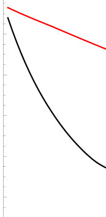
<figcaption class="paper-figure-caption"><b>Fig 1.</b> Figure 1: Two condensates ρ1 (lower curve, black online) and ρ2 (upper curve, red online) as functions of the mass ratio R. The interspecies coupling is γ = −0.1</figcaption>
</figure>
<figure class="paper-figure-card">
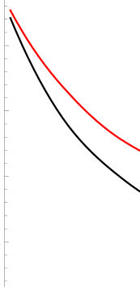
<figcaption class="paper-figure-caption"><b>Fig 2.</b> Figure 2: Same as for Fig.1 but with interspecies coupling taken at the initial scale to be γ = −1</figcaption>
</figure>
<figure class="paper-figure-card">
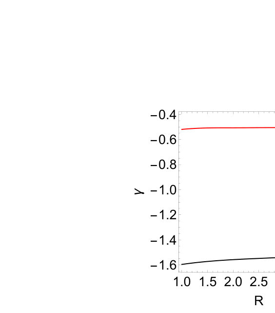
<figcaption class="paper-figure-caption"><b>Fig 3.</b> Figure 3: The interspecies coupling γ as a function of the mass ratio R. The starting values of the couplings are γ = −0.5 and γ = −1.5 (red and black online)</figcaption>
</figure>
<figure class="paper-figure-card">
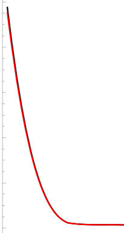
<figcaption class="paper-figure-caption"><b>Fig 4.</b> Figure 4: The condensates as the functions of the starting value of the coupling γ at R = 1</figcaption>
</figure>
<figure class="paper-figure-card">
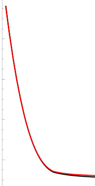
<figcaption class="paper-figure-caption"><b>Fig 5.</b> Figure 5: Same as in Fig.4 but for the asymmetry factor R = 3.</figcaption>
</figure>
</div>

<p><strong>Summary.</strong> This paper uses the Functional Renormalisation Group to study asymmetric binary Bose mixtures at zero temperature. It demonstrates that mass imbalance drives a spontaneous redistribution of quantum fluctuations, causing measurable deviations from simple mean-field predictions. The key finding is the systematic reduction of the density sound velocity due to these non-perturbative correlation effects.</p>
<p><strong>Why it may be interesting.</strong> This work provides a rigorous, non-perturbative tool (FRG) to quantify how quantum fluctuations modify collective excitations in multicomponent ultracold atomic mixtures, offering crucial corrections over standard mean-field models.</p>
<details>
<summary>Detailed structure</summary>
<p><strong>Main problem.</strong> The study investigates zero-temperature binary Bose mixtures exhibiting mass and intraspecies coupling imbalances.</p>
<p><strong>Main result.</strong> The analysis shows that dual asymmetry causes a spontaneous redistribution of quantum fluctuations, leading to quasiparticle residue divergences and systematically reducing the density-channel sound velocity contrary to standard Bogoliubov theory.</p>
<p><strong>Method.</strong> The Functional Renormalisation Group (FRG) framework is employed to provide a non-perturbative treatment of many-body correlations beyond mean-field approximations.</p>
<p><strong>Model / system.</strong> The system models binary Bose mixtures ($\phi$ and $\psi$) with tunable mass imbalances ($R=m_1/m_2$) and interspecies coupling ($\gamma$). The analysis focuses on collective excitations like density and spin sound modes.</p>
<p><strong>Key observables.</strong> Quasiparticle residues, density-channel sound velocity ($c_+$), spin-channel sound velocity ($c_-$), and the ratio of renormalization factors ($\sigma = Z_2/Z_1 - 1$).</p>
<p><strong>Important parameters / regimes.</strong> Mass asymmetry factor ($R$), interspecies coupling constant ($\gamma_{st}$), and intraspecies coupling ratios ($s = eta_2/eta_1$). The analysis is restricted to the dilute regime ($n a^3 \ll 1$).</p>
<p><strong>Assumptions / limitations.</strong> The FRG calculation relies on specific truncations of the effective action ansatz, which are assumed reliable in the dilute gas limit.</p>
<p><strong>Figures summary.</strong> Figures illustrate how sound velocities decrease with increasing mass asymmetry ($R$), and show the evolution of the relative dynamical renormalization ($\sigma$) as a function of coupling strengths.</p>
<p><strong>Paper structure.</strong> The paper develops the FRG flow equations for the effective action, analyzes the impact of asymmetry on quasiparticle residues, and compares the resulting predictions for sound velocities against established Bogoliubov theory.</p>
</details>
<details>
<summary>Abstract</summary>
<p>Zero-temperature binary Bose mixtures with mass and intraspecies couplings imbalances are studied using the functional renormalisation group (FRG) framework. We find that this dual asymmetry induces a spontaneous redistribution of quantum fluctuations between the components. This effect leads to a significant divergence in the quasiparticle residues of the two species, a phenomenon not captured in mean-field treatments. Critically, our FRG analysis predicts a systematic reduction of the density-channel sound velocity with increasing asymmetry -- a result that qualitatively contradicts the behaviour predicted by standard Bogoliubov theory. The ratio of the renormalisation factors is proposed as a robust quantitative probe of many-body correlations and fluctuation transfer. These findings provide a consistent non-perturbative framework for interpreting future experiments on heterogeneous mixtures.</p>
</details>
<p><sub><a href="#top">↑ back to top</a></sub></p>

<p><a id="paper-2606.14908"></a></p>
<h3 id="optimising-entanglement-distillation-policies"><a href="http://arxiv.org/abs/2606.14908v1">Optimising Entanglement Distillation Policies</a></h3>
<p><strong>Authors:</strong> Jigyen Bhavsar, Rajni Bala, Siddhartha Santra<br>
<strong>Type:</strong> theory · <strong>Category:</strong> quantum information and computing · <strong>PDF:</strong> <a href="https://arxiv.org/pdf/2606.14908v1">https://arxiv.org/pdf/2606.14908v1</a><br>
<strong>Analysis basis:</strong> full PDF text, analyzed in chunks
<strong>Topic relevance:</strong> <code>entanglement &amp; information structure</code> <strong>3/5</strong> · <code>non-equilibrium dynamics</code> <strong>2/5</strong> · <code>correlated / nonlocal dissipation</code> <strong>1/5</strong> · <code>driven-dissipative phase transition</code> <strong>1/5</strong> · <code>methods for driven-dissipative</code> <strong>1/5</strong></p>
<div class="figure-strip-hint">↔ Scroll figures horizontally</div>
<div class="paper-figures-scroll">
<figure class="paper-figure-card">
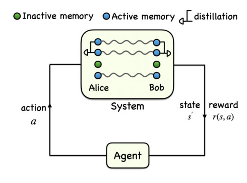
<figcaption class="paper-figure-caption"><b>Fig 1.</b> FIG. 1. Schematic representation of MDP formulation for op- timizing entanglement distillation policy. The agent interacts with system, which consists of two distant parties, Alice and Bob, each equipped with m ≥2 quantum memories. In above configuration, three quantum memories are active (blue cir- cle) that stores the entangled pairs (curved gray lines), while the remaining memories are inactive (green circle). The pairs in the first and second active memories are selected for dis- tillation , while the other pairs remain unchanged. At each decision step, the agent selects an action a (entanglement gen- eration or distillation), after which the system transitions to a new state s ′ from...</figcaption>
</figure>
<figure class="paper-figure-card">
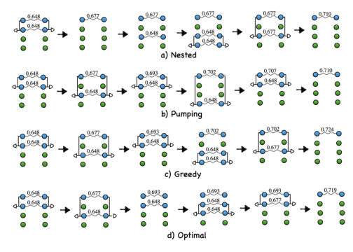
<figcaption class="paper-figure-caption"><b>Fig 2.</b> FIG. 2. Time evolution of the history trees for different en- tanglement distillation policies with four quantum memories at each station. The initial fidelity after entanglement gen- eration (with probability p = 0.9) is 0.648, and the target fi- delity is 0.710. The grey curved lines denote entangled pairs, with the associated numbers indicating their fidelities. Blue circles represent active quantum memories, while green cir- cles indicate inactive quantum memories. (a) History tree of entangled pairs under the nested purification policy. (b) His- tory tree of entangled pairs under the entanglement pumping policy. (c) History tree of entangled pairs under the greedy policy. (d) History...</figcaption>
</figure>
<figure class="paper-figure-card">
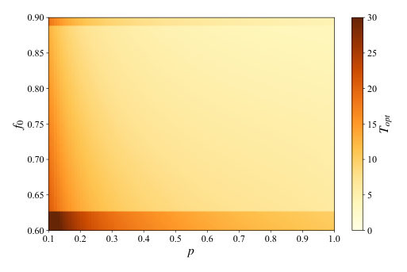
<figcaption class="paper-figure-caption"><b>Fig 3.</b> FIG. 3. Expected waiting time of optimal policy, Topt, for a node with four quantum memories (m = 4), shown for differ- ent values of the entanglement generation probability p and initial fidelity f0. The gap between the target fidelity fT and the initial fidelity f0 is fixed at ∆f = 0.04.</figcaption>
</figure>
<figure class="paper-figure-card">
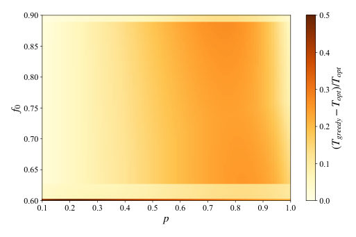
<figcaption class="paper-figure-caption"><b>Fig 4.</b> FIG. 5. The relative difference between the expected waiting time of optimal policy, Topt, and greedy policy, Tgreedy, with four quantum memories per node (m = 4), for different values of p and f0. For fix fidelity gap between initial and target fidelity (∆f = 0.04), an optimal policy performs increasingly better than greedy policy in regimes of intermediate f0, as well as low p with very low f0.</figcaption>
</figure>
<figure class="paper-figure-card">
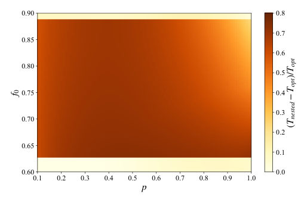
<figcaption class="paper-figure-caption"><b>Fig 5.</b> FIG. 4. The relative difference between the expected waiting time of optimal policy, Topt, and nested policy, Tnested, with four quantum memories per node (m = 4), for different values of p and f0. For fix fidelity gap between initial and target fidelity (∆f = 0.04), an optimal policy performs increasingly better than nested policy in regimes of intermediate f0.</figcaption>
</figure>
</div>

<p><strong>Summary.</strong> This paper develops an optimal strategy for entanglement distillation by modeling the process as a Markov Decision Process. By solving this MDP using value iteration, the authors derive policies that minimize the expected waiting time to achieve high-fidelity entanglement. This systematic approach proves superior to simple heuristic methods in resource-constrained quantum networking scenarios.</p>
<p><strong>Why it may be interesting.</strong> This work provides a systematic, mathematically rigorous framework (MDP) to optimize resource utilization in quantum communication tasks, which is crucial for designing practical quantum networks that must operate under realistic constraints like decoherence time.</p>
<details>
<summary>Detailed structure</summary>
<p><strong>Main problem.</strong> The core problem is optimizing entanglement distillation policies to minimize the expected waiting time required to boost low-fidelity entangled pairs up to a target fidelity threshold.</p>
<p><strong>Main result.</strong> An optimal policy derived from an MDP framework consistently outperforms heuristic baselines (greedy, nested, pumping), though its relative advantage depends non-trivially on system parameters like initial fidelity ($f_0$) and the fidelity gap ($\Delta f$).</p>
<p><strong>Method.</strong> The problem is rigorously formulated as a Markov Decision Process (MDP) and solved using value iteration to determine optimal deterministic policies.</p>
<p><strong>Model / system.</strong> The model involves two parties, Alice and Bob, each with $m$ quantum memories connected by parallel channels. Operations include probabilistic entanglement generation (EG) and 2-to-1 distillation (ED) on Werner states.</p>
<p><strong>Key observables.</strong> Expected waiting time ($T_\pi$), relative improvement of optimal policy over baselines ($rac{T_{baseline} - T_{opt}}{T_{opt}}$).</p>
<p><strong>Important parameters / regimes.</strong> Initial fidelity ($f_0$), target fidelity ($f_T$), number of memories ($m$), and generation probability ($p$).</p>
<p><strong>Assumptions / limitations.</strong> The analysis assumes the ability to model the sequential decision process as an MDP, though computational limits restrict exact solutions for large state spaces.</p>
<p><strong>Figures summary.</strong> Figures illustrate how $T_{opt}$ depends on parameters like $p$ and $f_0$, showing non-monotonic behavior; they also compare relative performance gains of optimal vs. heuristic policies (nested, greedy, pumping).</p>
<p><strong>Paper structure.</strong> The paper establishes the physical problem, models it as an MDP, derives the Bellman equation for minimum expected time, solves it via value iteration, and compares the resulting optimal policy against established heuristic protocols.</p>
</details>
<details>
<summary>Abstract</summary>
<p>Entanglement distillation is a fundamental operation in quantum information processing used to obtain higher-fidelity entangled pairs from a supply of less entangled quantum states using local operations aided by classical communication (LOCC). In a physically relevant setting, where states with an initial fidelity of $f_0$, probabilistically generated over multiple, $m$, memory pairs distributed between two parties, Alice and Bob, are pairwise distilled, the optimal policy identifies the system-configuration dependent sequence of entanglement generation and distillation operations that need to be performed in order to minimize the expected time to reach some target fidelity $f_T>f_0$. Here, we formulate and systematically analyze this task as a Markov decision problem and using a value iteration algorithm, obtain optimal deterministic policies that minimize the expected waiting time required to reach a target fidelity. Our results show that the expected waiting time under the optimal policy decreases with increasing generation probability $p$ and number of quantum memories $m$ - as expected. In contrast, it exhibits non-monotonic behavior with respect to $f_0$ for a fixed fidelity gap, $(Δf = f_T-f_0)$. While the optimal policy consistently outperforms baseline policies such as the greedy, nested and entanglement pumping policies, its relative advantage is regime-dependent, being determined by the system parameters ($p,f_0,f_T,m$), and exhibits a nontrivial dependence on the fidelity gap $Δf$. Our results highlight the value of formulating entanglement distillation as a Markov decision problem, enabling the systematic design of policies that achieve target fidelity thresholds for quantum information tasks in realistic resource-constrained settings.</p>
</details>
<p><sub><a href="#top">↑ back to top</a></sub></p>

<p><a id="paper-2606.15808"></a></p>
<h3 id="trainable-quantum-channels-as-computational-primitives-for-quantum-learning"><a href="http://arxiv.org/abs/2606.15808v1">Trainable Quantum Channels as Computational Primitives for Quantum Learning</a></h3>
<p><strong>Authors:</strong> Jingwei Wen, Ling Qian, Shijie Wei, Guilu Long<br>
<strong>Type:</strong> experiment · <strong>Category:</strong> quantum information and computing · <strong>PDF:</strong> <a href="https://arxiv.org/pdf/2606.15808v1">https://arxiv.org/pdf/2606.15808v1</a><br>
<strong>Analysis basis:</strong> full PDF text, analyzed in chunks
<strong>Topic relevance:</strong> <code>methods for driven-dissipative</code> <strong>3/5</strong> · <code>correlated / nonlocal dissipation</code> <strong>2/5</strong> · <code>QC/QI experiment</code> <strong>1/5</strong> · <code>driven-dissipative phase transition</code> <strong>1/5</strong> · <code>non-equilibrium dynamics</code> <strong>1/5</strong></p>
<div class="figure-strip-hint">↔ Scroll figures horizontally</div>
<div class="paper-figures-scroll">
<figure class="paper-figure-card">
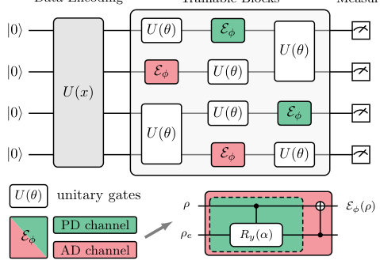
<figcaption class="paper-figure-caption"><b>Fig 1.</b> FIG. 1: Trainable quantum channels in QNNs. The pa- rameterized quantum channels Eϕ are incorporated into the variational architecture, with the channel parameters ϕ opti- mized jointly with the unitary parameters θ during the train- ing process. The quantum-circuit implementation for the PD and AD channels is realized using an environmental qubit initialized as ρe and controlled operations. The channel pa- rameter is encoded through the controlled rotation Ry(α) ac- cording to the relation ϕ = sin2(α/2).</figcaption>
</figure>
<figure class="paper-figure-card">
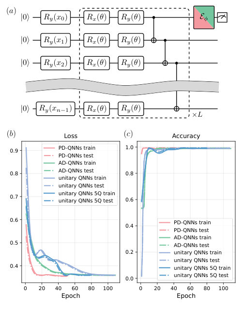
<figcaption class="paper-figure-caption"><b>Fig 2.</b> FIG. 2: Quantum circuit architecture and algorithm performance on the MNIST binary classification task (a) The variational quantum circuit with feature encoding, L repeated ansatz layers, and optional non-unitary channel Eϕ. (b,c) The loss and accuracy on the training and test dataset, comparing PD-QNNs, AD-QNNs, four-qubit unitary QNNs, and five-qubit unitary QNNs.</figcaption>
</figure>
<figure class="paper-figure-card">
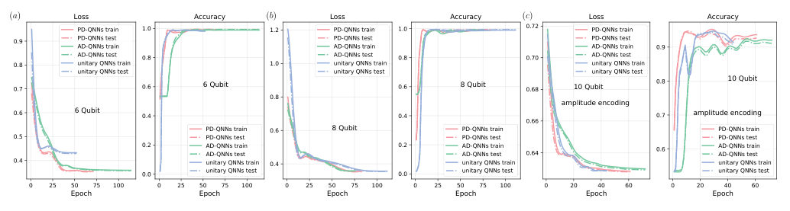
<figcaption class="paper-figure-caption"><b>Fig 3.</b> FIG. 3: Training and test performance comparison of unitary QNNs, PD-QNNs, and AD-QNNs on the MNIST binary classification task across varying qubit numbers and encoding schemes. (a) n = 6-qubit models with angle encoding; (b) n = 8-qubit models with angle encoding; (c) n = 10-qubit models with amplitude encoding.</figcaption>
</figure>
<figure class="paper-figure-card">
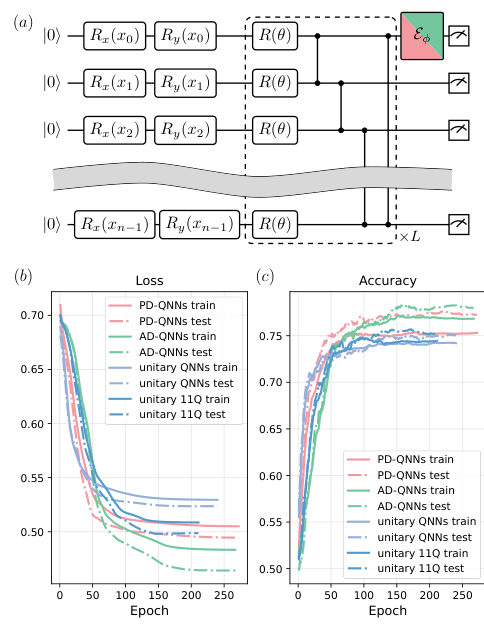
<figcaption class="paper-figure-caption"><b>Fig 4.</b> FIG. 4: Quantum circuit architecture and algorithm performance on the EGSSD binary classification task (a) The variational quantum circuit with feature encoding, L repeated ansatz layers, and optional non-unitary channel Eϕ. (b,c) The loss and accuracy on the training and test dataset, comparing PD-QNNs, AD-QNNs, ten-qubit unitary QNNs, and eleven-qubit unitary QNNs.</figcaption>
</figure>
<figure class="paper-figure-card">
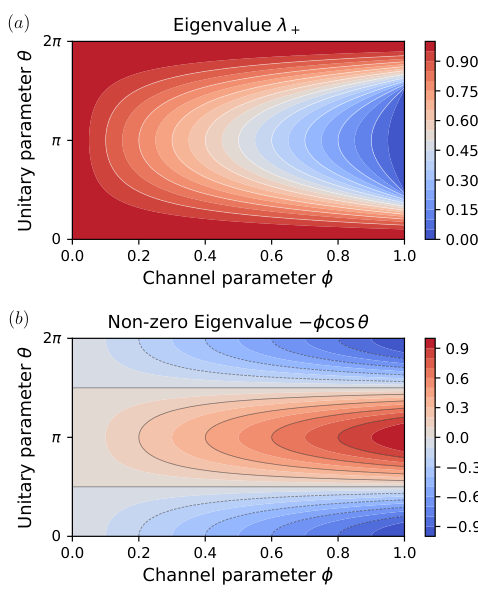
<figcaption class="paper-figure-caption"><b>Fig 5.</b> FIG. 5: Eigenvalues of the effective observable as func- tions of channel and unitary parameters. The panel (a) shows the positive eigenvalue λ+, while the panel (b) shows the non-zero eigenvalue −ϕ cos θ.</figcaption>
</figure>
</div>

<p><strong>Summary.</strong> The paper proposes a novel Quantum Machine Learning framework by treating dissipative quantum channels (like AD and PD) not as noise, but as trainable computational primitives. By incorporating these non-unitary elements into Variational Quantum Circuits, the model expands its representational space and enriches the optimization landscape. This leads to demonstrably superior training dynamics and predictive performance compared to standard unitary QNNs.</p>
<p><strong>Why it may be interesting.</strong> This work directly addresses how non-unitary evolution, typically viewed as noise in quantum computation, can be systematically parameterized and utilized to enhance computational power in machine learning algorithms, linking open quantum systems theory to practical QML architectures.</p>
<details>
<summary>Detailed structure</summary>
<p><strong>Main problem.</strong> Traditional variational quantum learning (QML) is limited to unitary dynamics, ignoring dissipative processes which can be harnessed as computational resources.</p>
<p><strong>Main result.</strong> Incorporating trainable quantum channels significantly enhances the optimization geometry of QNNs, leading to faster convergence and better classification accuracy than purely unitary models on benchmark tasks like MNIST.</p>
<p><strong>Method.</strong> The authors reformulate the model by replacing pure unitaries with parameterized, non-unitary CPTP maps (trainable quantum channels) derived from open-system dynamics.</p>
<p><strong>Model / system.</strong> The system is a Variational Quantum Classifier utilizing trainable Amplitude Damping (AD) and Phase Damping (PD) channels inserted into the variational circuit structure. The model output is a structured superposition of components governed by effective observables.</p>
<p><strong>Key observables.</strong> Classification accuracy, training loss reduction rate, and the spectrum of the effective observable ($\lambda$ vs $\phi$, $   heta$).</p>
<p><strong>Important parameters / regimes.</strong> Channel damping strength ($\phi$), variational circuit parameters ($  heta$), number of qubits (up to 10), and regularization strength ($\lambda$).</p>
<p><strong>Assumptions / limitations.</strong> The trainable channels are assumed to be physically realizable CPTP maps, allowing them to introduce adaptive observable geometries beyond unitary constraints.</p>
<p><strong>Figures summary.</strong> Figures compare loss/accuracy across different model types (Unitary vs. PD-QNNs vs. AD-QNNs) on MNIST for varying qubit numbers; another figure shows the eigenvalues of the effective observable as a function of channel and unitary parameters.</p>
<p><strong>Paper structure.</strong> The paper introduces the framework by contrasting unitary limitations with trainable channels, details the mathematical formulation using Kraus operators and gradient derivations ($\partial_	heta f$ and $\partial_\phi f$), presents empirical results on classification tasks (MNIST/EGSSD), and concludes by summarizing the enhanced optimization dynamics.</p>
</details>
<details>
<summary>Abstract</summary>
<p>Variational quantum learning is traditionally constrained to unitary dynamics, often treating quantum channels as detrimental noise. In this work, we reformulate the quantum channels as trainable computational primitives and establish a non-unitary quantum machine learning framework grounded in open-system dynamics. We demonstrate that the outputs of channel-enhanced quantum models form a structured superposition of multiple functional components. Each component is governed by an effective observable whose spectrum can be adaptively modulated during training, a significant departure from the spectral invariance in unitary transformations. Moreover, the proposed framework generalizes conventional unitary quantum models by retaining them as a special case while introducing additional non-unitary degrees of freedom. Furthermore, we reveal that trainable quantum channels enrich the optimization geometry through ensemble-averaged gradient and additional optimization directions induced by the Kraus operators. Empirical evaluations on classification tasks using trainable amplitude-damping and phase-damping channels confirm enhanced optimization dynamics and predictive performance. Our work provides a principled approach for leveraging quantum channels as trainable resources and advances the design of high-performance quantum learning architectures.</p>
</details>
<p><sub><a href="#top">↑ back to top</a></sub></p>

<p><a id="paper-2606.17045"></a></p>
<h3 id="compact-spin-charge-separated-neural-quantum-states-for-valence-bond-states"><a href="http://arxiv.org/abs/2606.17045v1">Compact Spin-Charge Separated Neural Quantum States for Valence-Bond States</a></h3>
<p><strong>Authors:</strong> Ang-Kun Wu, Louis Primeau, Yixin Zhang, Jingtao Zhang, Adrian Del Maestro, Yang Zhang<br>
<strong>Type:</strong> theory · <strong>Category:</strong> strongly correlated electrons · <strong>PDF:</strong> <a href="https://arxiv.org/pdf/2606.17045v1">https://arxiv.org/pdf/2606.17045v1</a><br>
<strong>Analysis basis:</strong> full PDF text, analyzed in chunks
<strong>Topic relevance:</strong> <code>analog quantum simulation</code> <strong>3/5</strong> · <code>correlated cavity matter</code> <strong>1/5</strong> · <code>entanglement &amp; information structure</code> <strong>1/5</strong> · <code>exotic spin models in light-matter</code> <strong>1/5</strong> · <code>methods for driven-dissipative</code> <strong>1/5</strong></p>
<div class="figure-strip-hint">↔ Scroll figures horizontally</div>
<div class="paper-figures-scroll">
<figure class="paper-figure-card">
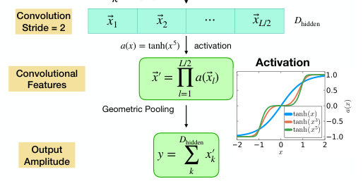
<figcaption class="paper-figure-caption"><b>Fig 1.</b> FIG. 1. The neural-network architecture for the quasi-one- dimensional VBS state. A convolutional layer with kernel size 2 and stride 2 extracts the local singlet-pairing rule on each dimer. The activation function tanh  x2k+1 separates the three local classes with amplitudes +1, 0, and −1. Geometric pooling combines the resulting features multiplicatively, reflecting the product structure of the VBS wavefunction. A final fully connected layer outputs the scalar wavefunction coefficient. Inset: tanh  x2k+1 for differ- ent values of k. Input: each spin is encoded as a one-hot vector, ↑→(1, 0)T , ↓→(0, 1)T (expanded to 4 dimensional space for zero and double occupancy), processed as input...</figcaption>
</figure>
<figure class="paper-figure-card">
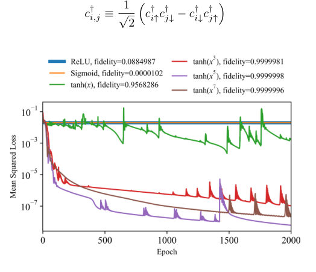
<figcaption class="paper-figure-caption"><b>Fig 2.</b> FIG. 2. Mean squared loss (MSL) for learning the local pairing rule of the VBS state with different activation functions at system size L = 16, with Hilbert-space dimension 12,870. In all cases, the neural network uses kernel size 2 and hidden dimension 16 with learning rate 10−2.</figcaption>
</figure>
<figure class="paper-figure-card">
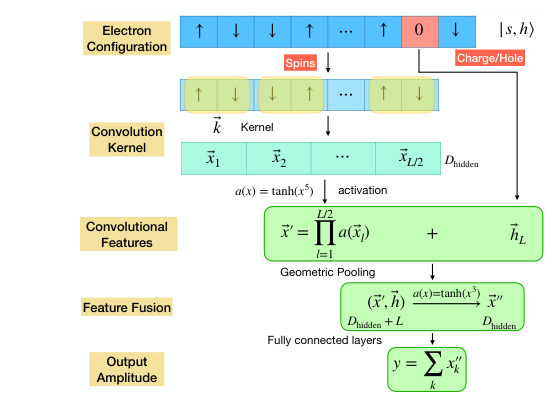
<figcaption class="paper-figure-caption"><b>Fig 3.</b> FIG. 3. Neural-network architecture for the quasi-one-dimensional soliton VBS state with a single hole. The input configuration is sepa- rated into spin and hole degrees of freedom. The spin branch follows the same structure as in Fig. 1, up to the final output layer. After geo- metric pooling, the spin features are combined with the hole-position features and passed through a small fully connected layer to capture the resonant superposition of different VBS configurations. The final activation function is tanh  x3 , which empirically performs better than tanh(x) and ReLU(x).</figcaption>
</figure>
<figure class="paper-figure-card">
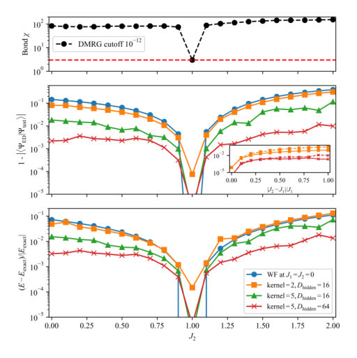
<figcaption class="paper-figure-caption"><b>Fig 4.</b> FIG. 4. Comparison of ground states as a function of J2 ∈[0, 2] at fixed t1 = 1, t2 = 0.5, and J1 = 1 for system size L = 13. The top, middle, and bottom panels show the MPS bond dimension χ, the neural-network fidelity, and the relative energy error, respec- tively. At the exactly solvable point J2 = J1, the ground state is the sVBS state and the minimal network with kernel size 2 and hidden dimension 16 is sufficient to achieve a relative infidelity of ∼10−4. Away from this point, the fidelity to the exact sVBS state decreases, while increasing the kernel size and hidden dimension systematically improves the neural-network approximation. From the DMRG per- spective, the departure from the...</figcaption>
</figure>
<figure class="paper-figure-card">
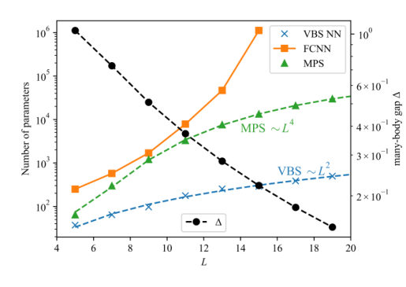
<figcaption class="paper-figure-caption"><b>Fig 5.</b> FIG. 5. The number of model parameters required by different ansatz states in the non-exact case J1 = 1, J2 = 0.9, t1 = 1, and t2 = 0.5. For the neural-network ansatz, the number of parameters is determined by requiring either the fidelity error or the relative energy error to be below 1%, averaged over 10 runs. For MPS, the bond dimension is determined by an SVD cutoff of 10−12. The dashed curves are polynomial fits, giving approximately L4 scaling for MPS and L2 scaling for the VBS neural-network ansatz. The black dashed line indicates the many-body gap.</figcaption>
</figure>
</div>

<p><strong>Summary.</strong> The authors propose a novel, physics-informed design strategy for Neural Quantum States (NQS) aimed at efficiently representing complex many-body wavefunctions like Valence-Bond Solids. By guiding the network architecture using knowledge from exactly solvable limits, they create compact models that outperform generic deep learning baselines in terms of parameter efficiency and accuracy. This establishes a powerful framework for simulating strongly correlated electron systems.</p>
<p><strong>Why it may be interesting.</strong> This work provides a concrete recipe for building highly compact and expressive NQS tailored to the specific symmetries and local constraints inherent in strongly correlated electron models, which is crucial for advancing quantum simulation beyond simple mean-field approaches.</p>
<details>
<summary>Detailed structure</summary>
<p><strong>Main problem.</strong> Developing efficient, physically informed Neural Quantum States (NQS) representations for quantum many-body wavefunctions that possess complex sign structures and constrained Hilbert spaces.</p>
<p><strong>Main result.</strong> The proposed physics-guided NQS architecture achieves high fidelity in representing Valence-Bond-Solid (VBS) states with significantly fewer parameters than generic baselines, showing favorable parameter scaling ($L^2$ vs $L^4$) compared to Matrix Product States.</p>
<p><strong>Method.</strong> A 'solvable-point-guided strategy' is used: designing the NQS architecture based on an exactly solvable point (where local rules are known) and then refining it by enlarging kernel size or hidden dimension for non-exact regimes.</p>
<p><strong>Model / system.</strong> The study focuses on quasi-one-dimensional VBS states and their doped soliton variants ($   ext{sVBS}$), which are the exact ground states of a $t	ext{-}J$-like model. The underlying physics involves strongly correlated electron interactions.</p>
<p><strong>Key observables.</strong> Fidelity of the NQS representation, variational energy ($E$), and parameter scaling with system size ($L$).</p>
<p><strong>Important parameters / regimes.</strong> Coupling constants ($J_1, J_2$) defining the regime (exactly solvable when $J_1=J_2$); System size $L$.</p>
<p><strong>Assumptions / limitations.</strong> The success relies on identifying an exactly solvable point to guide initial architecture design; VMC optimization is used for benchmarking.</p>
<p><strong>Figures summary.</strong> Figures illustrate the minimal NQS architecture using convolutional layers and geometric pooling, comparing Mean Squared Loss (MSL) across different activation functions, and showing energy benchmarks in both exactly solvable and non-exact regimes.</p>
<p><strong>Paper structure.</strong> The paper introduces the problem of efficient NQS design for constrained systems. It details a physics-motivated architecture incorporating local convolutions, geometric pooling, and specialized activations. Results are presented by testing on VBS/sVBS states, comparing parameter scaling against MPS, and finally discussing optimization techniques like Stochastic Reconfiguration (SR) in Variational Monte Carlo (VMC).</p>
</details>
<details>
<summary>Abstract</summary>
<p>Neural-network quantum states (NQS) provide a flexible nonlinear representation of quantum many-body wavefunctions, but their efficiency depends sensitively on whether the architecture reflects the sign structure and constrained Hilbert space of the target state. In this work, we propose a solvable-point-guided strategy: design the architecture at an exactly solvable point where the correct local rules can be read off, then refine to the non-exact regime by enlarging only the kernel size and hidden dimension. The strategy is built from four physics-motivated designs: a stride-matched local-rule convolution, geometric pooling, a sign-resolving $\tanh(x^{2k+1})$ activation, and explicit spin-hole sector separation. We test this approach on quasi-one-dimensional valence-bond-solid (VBS) states and their doped soliton variants (sVBS), the exact ground states of a $t$-$J$-like model with a single mobile hole. In finite-size benchmarks, this architecture reaches high fidelity for the exact sVBS state with substantially fewer parameters than generic fully connected, convolutional, and transformer baselines tested under the same setup. For the spin sector, the learned local rule transfers from small to larger systems without retraining. Away from the solvable point, increasing kernel size and hidden dimension systematically improves accuracy, and the model shows approximately $L^2$ parameter scaling in the gapless regime for system size $L$, compared with approximately $L^4$ for matrix-product states in the same regime. Our work establishes a recipe for compact NQS in sign-structured, constrained Hilbert spaces and paves the pathway to physics-informed architectures for the broader $t$-$J$ and Hubbard families.</p>
</details>
<p><sub><a href="#top">↑ back to top</a></sub></p>

<p><a id="paper-2606.15882"></a></p>
<h3 id="finite-dimensional-type-i-von-neumann-algebras-in-pytorch-a-gpu-accelerated-framework-for-random-block-diagonal-operators"><a href="http://arxiv.org/abs/2606.15882v1">Finite-Dimensional Type I von Neumann Algebras in PyTorch: A GPU-Accelerated Framework for Random Block-Diagonal Operators</a></h3>
<p><strong>Authors:</strong> Irina Nikolaeva, Andrej Novikov<br>
<strong>Type:</strong> both · <strong>Category:</strong> numerical methods · <strong>PDF:</strong> <a href="https://arxiv.org/pdf/2606.15882v1">https://arxiv.org/pdf/2606.15882v1</a><br>
<strong>Analysis basis:</strong> full PDF text, analyzed in chunks
<strong>Topic relevance:</strong> <code>methods for driven-dissipative</code> <strong>3/5</strong> · <code>Keldysh / 2PI / non-Gaussian methods</code> <strong>1/5</strong> · <code>analog quantum simulation</code> <strong>1/5</strong> · <code>correlated / nonlocal dissipation</code> <strong>1/5</strong> · <code>driven-dissipative phase transition</code> <strong>1/5</strong></p>
<div class="figure-strip-hint">↔ Scroll figures horizontally</div>
<div class="paper-figures-scroll">
<figure class="paper-figure-card">
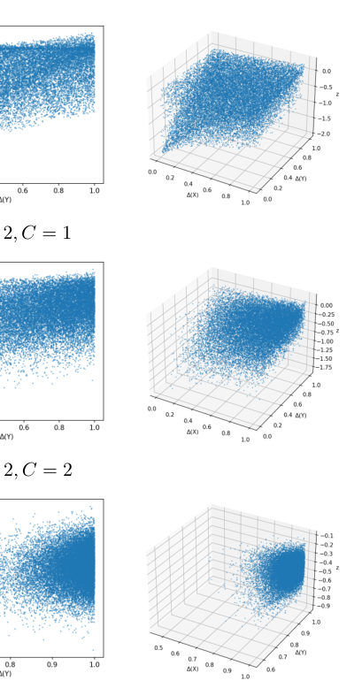
<figcaption class="paper-figure-caption"><b>Fig 1.</b> Figure 1: Experiment 1: small dimension (kmax = 2).</figcaption>
</figure>
<figure class="paper-figure-card">
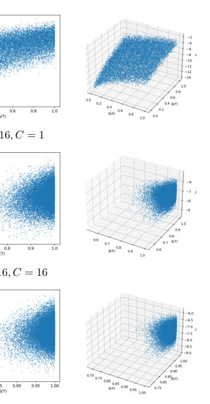
<figcaption class="paper-figure-caption"><b>Fig 2.</b> Figure 2: Experiment 1: intermediate dimension (kmax = 16).</figcaption>
</figure>
<figure class="paper-figure-card">
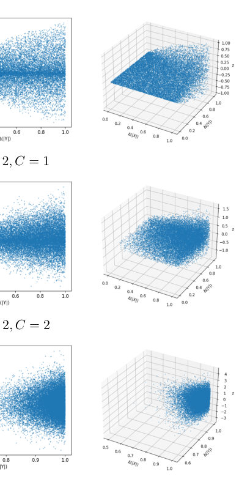
<figcaption class="paper-figure-caption"><b>Fig 3.</b> Figure 3: Experiment 2: small dimension.</figcaption>
</figure>
<figure class="paper-figure-card">
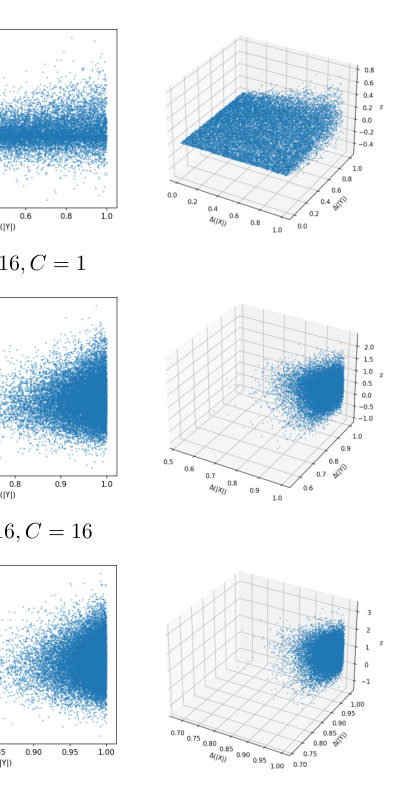
<figcaption class="paper-figure-caption"><b>Fig 4.</b> Figure 4: Experiment 2: intermediate dimension.</figcaption>
</figure>
<figure class="paper-figure-card">
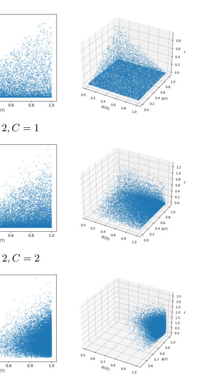
<figcaption class="paper-figure-caption"><b>Fig 5.</b> Figure 5: Experiment 3: small dimension.</figcaption>
</figure>
</div>

<p><strong>Summary.</strong> This paper introduces an open-source PyTorch library designed to perform numerical simulations on finite-dimensional Type I von Neumann algebras. It provides GPU acceleration and advanced tools for calculating observables related to random block-diagonal operators. This allows researchers to study quantum phenomena governed by these algebraic structures in regimes previously inaccessible due to computational cost.</p>
<p><strong>Why it may be interesting.</strong> While mathematically abstract, the focus on GPU-accelerated simulation of structured operators is highly relevant for simulating open quantum systems or complex Hamiltonians where block-diagonalization simplifies the structure but requires massive computational resources.</p>
<details>
<summary>Detailed structure</summary>
<p><strong>Main problem.</strong> Developing efficient numerical tools for Monte Carlo simulations involving finite-dimensional Type I von Neumann algebras.</p>
<p><strong>Main result.</strong> The library successfully implements complex calculations on block-diagonal operators, showing significant GPU speedups and confirming expected mathematical inequalities in various quantum observables.</p>
<p><strong>Method.</strong> It utilizes a custom PyTorch framework with lazy evaluation to handle batched tensor representations of random block-diagonal operators, performing functional calculus via SVD or power iteration.</p>
<p><strong>Model / system.</strong> The model is based on finite-dimensional Type I von Neumann algebras, represented as direct sums of matrix algebras ($igoplus M_{n_c}(\mathbb{C})$), relevant in quantum mechanics for studying superselection rules and decoherence.</p>
<p><strong>Key observables.</strong> Michelson contrast ($\Delta(A)$) and various trace difference quantities ($z$), such as $    ext{Tr}(|XY|) -     ext{Tr}(|X||Y|)$.</p>
<p><strong>Important parameters / regimes.</strong> Batch size ($B$), number of direct summands ($C$), and maximum dimension ($k_{\max}$), with performance benchmarks up to $2	imes10^4$ samples.</p>
<p><strong>Assumptions / limitations.</strong> The framework is limited to Type I algebras (direct sums) and finite dimensions; SVD becomes a bottleneck for very large dimensions.</p>
<p><strong>Figures summary.</strong> Figures show Monte Carlo results validating trace inequalities across different dimensions, while heatmaps illustrate substantial GPU speedups over CPU for various linear algebra operations.</p>
<p><strong>Paper structure.</strong> The paper introduces the library structure, validates its implementation against analytical expectations (e.g., Haar moments), details multiple experiments testing quantum observables ($z$), and concludes with performance benchmarks and future work directions.</p>
</details>
<details>
<summary>Abstract</summary>
<p>We present \texttt{torch_vn_algebra}, an open-source Python library built on PyTorch for numerical experiments with finite-dimensional Type I von Neumann algebras (direct sums of matrix algebras). The library provides:   $\bullet$ a compact batched tensor representation $(B,C,k_{\max},k_{\max})$ that handles both Monte Carlo samples and multiple direct summands;   $\bullet$ lazy evaluation of operators to avoid unnecessary memory allocation;   $\bullet$ generation of random operators with arbitrary eigenvalue distributions (user-provided samplers) and various unitary ensembles (Haar, $\mathrm{SU}(n)$, COE, CSE, diagonal phases);   $\bullet$ functional calculus via SVD (absolute value, square root, inverse, entropy) and a hybrid method for extreme eigenvalues (exact diagonalisation for $k_{\max}\le256$, otherwise power iteration);   $\bullet$ three trace functionals (blunt, normalised subspace trace, and the von Neumann tracial state);   $\bullet$ GPU-accelerated batched linear algebra for moderate-scale Monte Carlo studies (e.g., $2\times10^4$ samples of $100\times100$ operators).   The library is validated against analytical expectations (Haar moments, trace properties). Performance benchmarks on a Tesla P100 GPU are presented and discussed. Limitations and future work are outlined. The code is open-source.</p>
</details>
<p><sub><a href="#top">↑ back to top</a></sub></p>

<p><a id="paper-2606.15131"></a></p>
<h3 id="quasiparticle-diffusion-for-the-toda-fluid-in-equilibrium"><a href="http://arxiv.org/abs/2606.15131v1">Quasiparticle Diffusion for the Toda Fluid in Equilibrium</a></h3>
<p><strong>Authors:</strong> Seema Chahal, Alberto Brollo, Indranil Mukherjee, Abhishek Dhar, Anupam Kundu, Herbert Spohn<br>
<strong>Type:</strong> theory · <strong>Category:</strong> statistical mechanics · <strong>PDF:</strong> <a href="https://arxiv.org/pdf/2606.15131v1">https://arxiv.org/pdf/2606.15131v1</a><br>
<strong>Analysis basis:</strong> full PDF text, analyzed in chunks
<strong>Topic relevance:</strong> <code>non-equilibrium dynamics</code> <strong>3/5</strong> · <code>non-equilibrium universality</code> <strong>2/5</strong> · <code>Frenkel-Kontorova</code> <strong>1/5</strong> · <code>Keldysh / 2PI / non-Gaussian methods</code> <strong>1/5</strong></p>
<div class="figure-strip-hint">↔ Scroll figures horizontally</div>
<div class="paper-figures-scroll">
<figure class="paper-figure-card">
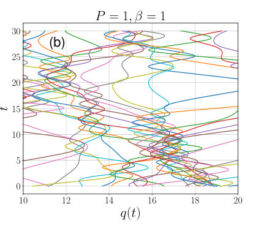
<figcaption class="paper-figure-caption"><b>Fig 1.</b> Figure 1: The plots show one sample of Toda particle trajectories. The tem- perature of the Toda fluid is 1 and density is 0.25 in (a) and 1.65 in (b). For better visibility, these panels are zoomed-in views of trajectories from 100 Toda particles.</figcaption>
</figure>
<figure class="paper-figure-card">
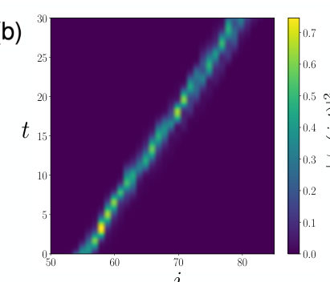
<figcaption class="paper-figure-caption"><b>Fig 2.</b> Figure 2: Panels (a) and (b) display the evolution of a representative eigenvector corresponding to the eigenvalue λα = 0.9976. In panel (a), the probability density in index space resulting from the eigenvector is shown at selected time instants. The motion of the peaks is clearly visible and their projection onto the index–time plane is indicated by the light blue line. Panel (b) presents the corresponding heatmap, highlighting the left-to-right propagation of the eigenvector together with its small spatial width.</figcaption>
</figure>
<figure class="paper-figure-card">
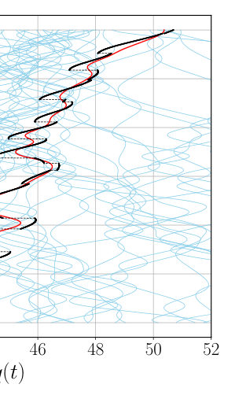
<figcaption class="paper-figure-caption"><b>Fig 3.</b> Figure 3: Comparing representative quasiparticle trajectories: the argmax rule (black broken line), having jumps indicated by black dashed segments, and the |ψ|2 rule of Eq. (32), yielding a smooth trajectory (red solid line). The quasipar- ticle is labeled by the eigenvalue λα = 0.9976. The light blue lines display the underlying Toda particle trajectories.</figcaption>
</figure>
<figure class="paper-figure-card">
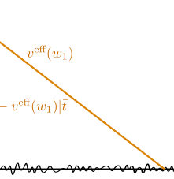
<figcaption class="paper-figure-caption"><b>Fig 4.</b> Figure 4: Schematically illustrating the contribution of initial-state noise to dif- fusion. A tagged quasiparticle, initially at the origin (red line), moves with an effective velocity veff(w) through a noisy, homogeneous background. Quasipar- ticles from each mesoscopic fluid cell propagate with distinct effective velocities and fluctuating particle numbers. These density fluctuations propagate ballisti- cally and scatter with the tagged quasiparticle. Over a time interval ¯t, the tagged quasiparticle trajectory is influenced by quasiparticles of rapidity w′ that origi- nated within a spatial region of extent ℓ= |veff(w) −veff(w′)|¯t.</figcaption>
</figure>
<figure class="paper-figure-card">
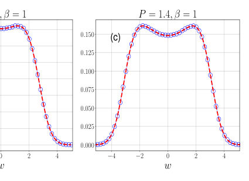
<figcaption class="paper-figure-caption"><b>Fig 5.</b> Figure 5: Plots comparing the simulation (blue circles) and analytical results given by Eq. (20) (red dashed line) for the density of states across three set of parameters: (a) P = 0.32, β = 0.5, yielding an average stretch per particle ν = 2.58, (b) P = 1, β = 1, with ν = 0.58, and (c) P = 1.4, β = 1, with ν = 0.06. For all three plots, N = 500, ∆= 0.05, and averages have been taken over R = 105 samples. The density of the Toda fluid is increasing from left to right.</figcaption>
</figure>
</div>

<p><strong>Summary.</strong> The paper develops a novel numerical technique using the eigenvectors of the Lax matrix to track quasiparticle motion in the integrable Toda fluid at equilibrium. By simulating this process and comparing results against advanced theoretical tools like TBA, the authors confirm Brownian diffusion for quasiparticles and derive quantitative predictions for transport coefficients like the diffusion constant.</p>
<p><strong>Why it may be interesting.</strong> This work provides a powerful, generalizable methodology (eigenvector tracking) to study transport coefficients like diffusion in complex integrable many-body systems, bridging spectral theory with non-equilibrium statistical mechanics.</p>
<details>
<summary>Detailed structure</summary>
<p><strong>Main problem.</strong> To numerically track quasiparticle diffusion for the Toda fluid in thermal equilibrium and extend these tracking methods to other integrable systems possessing a Lax matrix.</p>
<p><strong>Main result.</strong> The numerical simulations confirm Brownian motion for both individual quasiparticles and tagged particles, with calculated diffusion constants matching novel predictions from Thermodynamic Bethe Ansatz (TBA) theory.</p>
<p><strong>Method.</strong> The authors developed a specialized numerical scheme based on tracking the time-dependent eigenvectors of the Lax matrix associated with the integrable Toda fluid Hamiltonian.</p>
<p><strong>Model / system.</strong> The system is the classical Toda fluid, defined by an exponential interaction potential. Its dynamics are governed by conserved quantities derived from the compatibility condition involving a Lax matrix, placing it within the framework of completely integrable systems studied via Generalized Gibbs Ensembles (GGE).</p>
<p><strong>Key observables.</strong> Diffusion constant ($D(w)$), average quasiparticle velocity ($\langle v_\alpha 
angle_{P,V}$), and the velocity autocorrelation function $\langle v_\alpha(t)v_\alpha(0)
angle$.</p>
<p><strong>Important parameters / regimes.</strong> Temperature ($T$) or inverse temperature ($eta$), Pressure ($P$), and system size ($N$).</p>
<p><strong>Assumptions / limitations.</strong> The analysis assumes that quasiparticle motion can be accurately tracked via eigenvectors of the Lax matrix, which is mathematically sound but noted to break down visually at high densities.</p>
<p><strong>Figures summary.</strong> Figures illustrate sample particle trajectories (Fig 1), eigenvector evolution (Fig 2), and crucially compare numerical results for $  ext{veff}(w)$ and $D(w)$ against analytical TBA predictions (Figs 6, 7).</p>
<p><strong>Paper structure.</strong> The paper progresses from establishing the Lax pair formalism and conserved quantities to deriving macroscopic properties using GGE/TBA. It then presents the core numerical method for tracking quasiparticles, culminating in comparisons of diffusion constants derived both numerically and theoretically.</p>
</details>
<details>
<summary>Abstract</summary>
<p>Many-body integrable systems can be understood as a gas of quasiparticles. They propagate ballistically and drive large-scale transport. However, with the exception of the hard rods system, no tools have been available to numerically track such quasiparticles. Focusing on the Toda fluid, whose integrability relies on the availability of a Lax pair, we present a numerical scheme to track quasiparticle trajectories as determined by the time-dependent eigenvectors of the Lax matrix. Simulating the Toda fluid in thermal equilibrium, this tracking scheme is used to numerical confirm Brownian motion of a quasiparticle. Simulated is also the motion of a tagged particle. Our numerical results for the diffusion constant matches with a novel TBA prediction. We believe our numerical scheme can be extended to other classical many-particle models possessing a Lax matrix.</p>
</details>
<p><sub><a href="#top">↑ back to top</a></sub></p>

<p><a id="paper-2606.16968"></a></p>
<h3 id="electronic-greens-function-across-the-pseudogap-to-stripe-transition-in-the-math1094math-math1095math-math1096math-model"><a href="http://arxiv.org/abs/2606.16968v1">Electronic Green's function across the pseudogap to stripe transition in the $t$-$t'$-$J$ model</a></h3>
<p><strong>Authors:</strong> Martin Ulaga, Aritra Sinha, Alexander Wietek<br>
<strong>Type:</strong> theory · <strong>Category:</strong> strongly correlated electrons · <strong>PDF:</strong> <a href="https://arxiv.org/pdf/2606.16968v1">https://arxiv.org/pdf/2606.16968v1</a><br>
<strong>Analysis basis:</strong> full PDF text, analyzed in chunks
<strong>Topic relevance:</strong> <code>methods for driven-dissipative</code> <strong>3/5</strong> · <code>Keldysh / 2PI / non-Gaussian methods</code> <strong>1/5</strong> · <code>analog quantum simulation</code> <strong>1/5</strong> · <code>driven-dissipative phase transition</code> <strong>1/5</strong></p>
<div class="figure-strip-hint">↔ Scroll figures horizontally</div>
<div class="paper-figures-scroll">
<figure class="paper-figure-card">
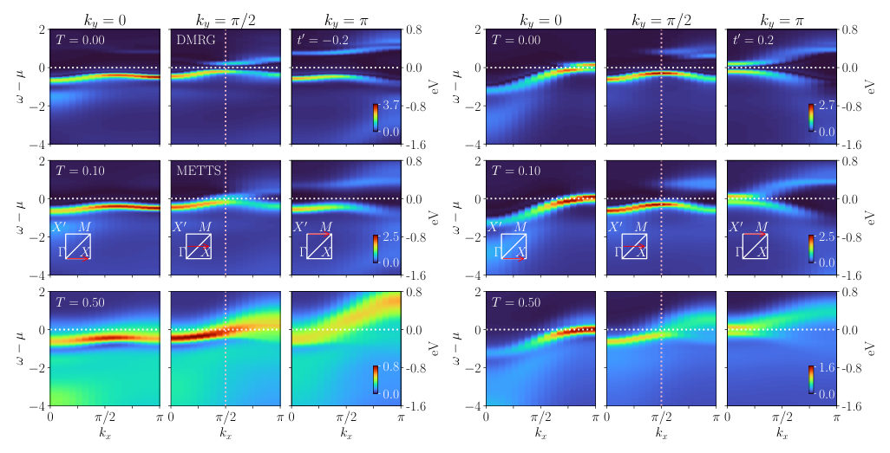
<figcaption class="paper-figure-caption"><b>Fig 1.</b> Figure 1. The single-particle spectral function A(k, ω) for three momentum cuts with ky = 0, π/2, π at T = 0 (DMRG), T = 0.1, T = 0.5 at doping p = 1/16 and t′ = −0.2 (left, relevant for hole-doped cuprates), or t′ = 0.2 (right). The dynamical METTS were taken from up to R = 20 independent Markov chains running up to 150 steps deep and time-evolved to Ωt = 50 using a complex angle θ = π/16, cf. Appendix C. The energies ω are taken with respect to the chemical potential computed as in Eq. 6. For comparison to ARPES results, we employ a common estimate t = 0.4 eV [12]. For both t′ = 0.2 and t′ = −0.2, we observe two well-developed bands separated by a gap around the chemical potential, which...</figcaption>
</figure>
<figure class="paper-figure-card">
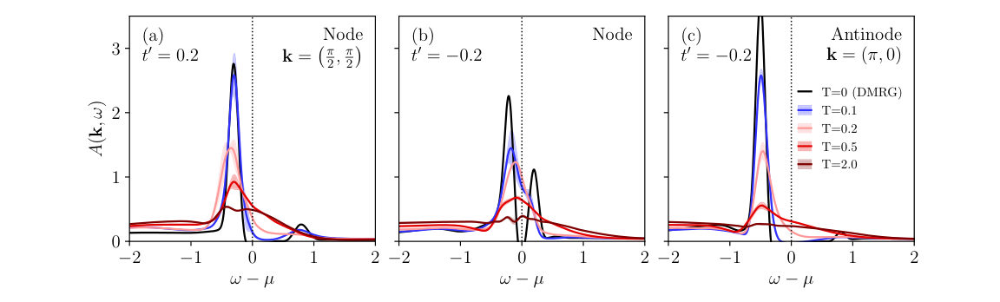
<figcaption class="paper-figure-caption"><b>Fig 2.</b> Figure 2. Spectral function A(k, ω) of the t-t′-J model on the 16 × 4 cylinder for J = 0.4 as a function of temperature obtained using dynamical METTS at the node (k = (π/2, π/2)) for t′ = ±0.2 (a,b) and the antinode (k = (π, 0)) for t′ = −0.2 (c). In all cases, θ = π/16. The vertical dashed line indicates the value of the chemical potential µ. In each case, we observe two peaks that gradually merge into a single peak upon increasing temperature, filling the gap between the two distinct bands.</figcaption>
</figure>
<figure class="paper-figure-card">
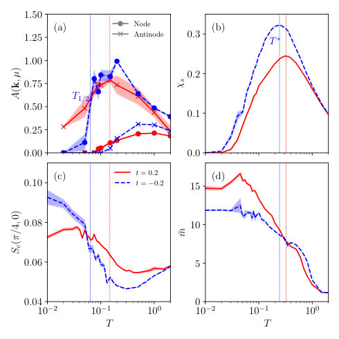
<figcaption class="paper-figure-caption"><b>Fig 3.</b> Figure 3. Temperature dependence of the (a) spectral weight at the chemical potential at the node (kN = (π/2, π/2)) and the antinode (kA = (π, 0)) (b) uniform magnetic susceptibility χs (c) charge structure factors at the CDW ordering wave-vector ks = (π/4, 0) (d) mean charge cluster size. The suppression of nodal spectral weight at the chemical potential (vertical dashed lines, obtained as the half of the maximum intensity) occurs at the onset of CDW formation, denoted by T1/2, e.g., T1/2 ≈0.12 for t′ = 0.2. T1/2 coincides with the rapid onset of CDW order, quantified by Sc(ks) in panel (c). The maximum of χs defines the pseudogap onset temperature T ∗, e.g., for t′ = 0.2, T ∗≈0.32.</figcaption>
</figure>
<figure class="paper-figure-card">
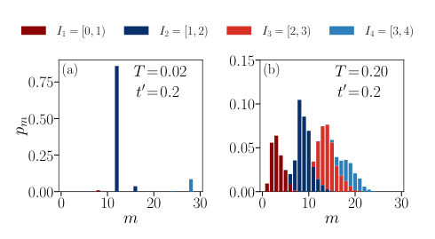
<figcaption class="paper-figure-caption"><b>Fig 4.</b> Figure 4. Density-weighted cluster-size distributions pm for the 16 × 4 cylinder at p = 1/16 and t′/t = 0.2, extracted from METTS snapshots. The total height at fixed m gives the fraction of doped charge residing in hole-rich connected clusters of size m, while the stacked colors resolve this weight by the cluster hole mass in the intervals I1 = [0, 1), I2 = [1, 2), I3 = [2, 3), and I4 = [3, 4). (a) At T = 0.02, the weight is sharply concentrated near a characteristic size, consistent with charge density waves. (b) At T = 0.20, the weight is spread over many sizes, indicating a fluctuating mesoscopic clustered regime after stripe melting.</figcaption>
</figure>
</div>

<p><strong>Summary.</strong> This work uses tensor network methods on the $t$-$t'$-$J$ model to probe the pseudogap regime in cuprates. The research demonstrates that the spectral gap structure evolves significantly as temperature increases, correlating the closing of the nodal gap with the melting of underlying charge stripe order into fluctuating clusters. This provides theoretical evidence linking CDW physics directly to the superconducting pseudogap phenomenology.</p>
<p><strong>Why it may be interesting.</strong> The detailed study of spectral weight transfer across different ordering regimes (CDW $  o$ Fluctuating Clusters) provides a quantitative theoretical framework for understanding complex many-body phase transitions relevant to high-$T_c$ superconductivity, which often involves strong correlations.</p>
<details>
<summary>Detailed structure</summary>
<p><strong>Main problem.</strong> The study investigates the poorly understood relationship between the pseudogap phenomenon, charge density waves (CDWs), and stripe order in cuprate superconductors.</p>
<p><strong>Main result.</strong> The momentum differentiation characteristic of the pseudogap is strongly dependent on $t'$ and evolves into a Fermi arc at intermediate temperatures as coherent stripe order melts into fluctuating charge clusters.</p>
<p><strong>Method.</strong> The authors use tensor network algorithms (specifically METTS) to calculate the electronic Green's function for finite temperature dynamics on a cylinder geometry.</p>
<p><strong>Model / system.</strong> The system is modeled by the underdoped $t$-$t'$-$J$ model, studied at doping $p=1/16$. The Hamiltonian includes hopping terms ($t, t'$) and an antiferromagnetic exchange coupling ($J$).</p>
<p><strong>Key observables.</strong> Electronic Green's function $A(\mathbf{k}, \omega)$, momentum differentiation, nodal gap closing ($\Delta_N$), charge structure factor $S_c(\mathbf{k}_s)$, and real-space cluster size distribution $p_m$.</p>
<p><strong>Important parameters / regimes.</strong> $t'$, doping ($p=1/16$), temperature ($T$), and the ratio of hopping parameters relative to $J$.</p>
<p><strong>Assumptions / limitations.</strong> The analysis relies on finite cylinder geometry approximations, and the chemical potential $\mu$ is determined via a Legendre transformation due to non-convexity in ground state energy calculations.</p>
<p><strong>Figures summary.</strong> Figures illustrate $A(\mathbf{k}, \omega)$ at various temperatures showing gap evolution; other figures map out the temperature dependence of spectral weight loss relative to CDW order onset and show cluster size distribution shifts from ordered to fluctuating states.</p>
<p><strong>Paper structure.</strong> The paper progresses by first establishing the model and methods (Green's function calculation via tensor networks), then analyzing the temperature evolution of spectral features, linking gap closing at the node to CDW melting, and finally using real-space analysis to quantify the transition from ordered stripes to fluctuating clusters.</p>
</details>
<details>
<summary>Abstract</summary>
<p>Superconducting domes in strongly correlated electronic systems are often accompanied by charge density waves and peculiar features in the electronic structure. The appearance of a pseudogap, in particular, and its relation to charge density waves remains insufficiently understood. Here, we investigate the electronic Green's function of the underdoped $t$-$t'$-$J$ model of the cuprate superconductors using tensor network algorithms for finite temperature dynamics on cylinders of width $4$. We find the prominent momentum differentiation, the hallmark of the pseudogap, to be strongly dependent on $t'$, which develops into a momentum-dependent opening of a gap upon decreasing temperature, consistent with the formation of a Fermi arc at intermediate temperatures. The nodal gap around ${\bf k}=(π/2,π/2)$ closes and fills with increasing temperature as coherent stripe order melts into a regime of fluctuating charge clusters.</p>
</details>
<p><sub><a href="#top">↑ back to top</a></sub></p>

<p><a id="paper-2606.16235"></a></p>
<h3 id="interfacial-control-of-magnetism-and-electron-transport-in-nonisostructural-srruomath1124mathsrcuomath1125math-heterostructure"><a href="http://arxiv.org/abs/2606.16235v1">Interfacial control of magnetism and electron transport in nonisostructural SrRuO$_3$/SrCuO$_2$ heterostructure</a></h3>
<p><strong>Authors:</strong> Digbijaya Palai, B. Maharana, P. Biswal, Shwetha G. Bhat, D. Nayak, D. Sahoo, R. Soni, K. Senapati, Z. Hossain, D. Samal<br>
<strong>Type:</strong> experiment · <strong>Category:</strong> strongly correlated electrons · <strong>PDF:</strong> <a href="https://arxiv.org/pdf/2606.16235v1">https://arxiv.org/pdf/2606.16235v1</a><br>
<strong>Analysis basis:</strong> full PDF text, analyzed in chunks
<strong>Topic relevance:</strong> <code>exotic spin models in light-matter</code> <strong>3/5</strong> · <code>spintronics-quantum-optics interface</code> <strong>3/5</strong></p>
<div class="figure-strip-hint">↔ Scroll figures horizontally</div>
<div class="paper-figures-scroll">
<figure class="paper-figure-card">
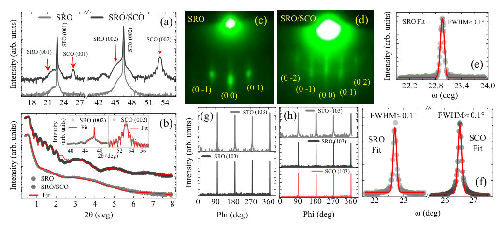
<figcaption class="paper-figure-caption"><b>Fig 1.</b> FIG. 1. (a) X-ray diffraction (XRD) θ–2θ scans, full range for the SRO single-layer and the SRO/SCO bilayer films. (b) X-ray reflectivity (XRR) data of bare SRO and SRO/SCO bilayer films. (c, d) depicts the RHEED images of bare SRO film, and SRO/SCO bilayer. (e, f) ω-scans (rocking curves) of the bare 4 nm SRO film and the individual 4 nm SRO and 24 nm SCO layers in the SRO/SCO bilayer sample. ϕ-scans of 4 nm SRO layer and STO in bare SRO film (g) and 4 nm SRO, 24 nm SCO, and STO in the SRO/SCO heterostructure (h) showing fourfold symmetry.</figcaption>
</figure>
<figure class="paper-figure-card">
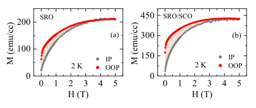
<figcaption class="paper-figure-caption"><b>Fig 2.</b> FIG. 3. Area under the loop in IP and OOP curve in the first quadrant from zero to saturation field (HS) for (a) the bare SRO film and (b) SRO/SCO bilayer at 5 K.</figcaption>
</figure>
<figure class="paper-figure-card">
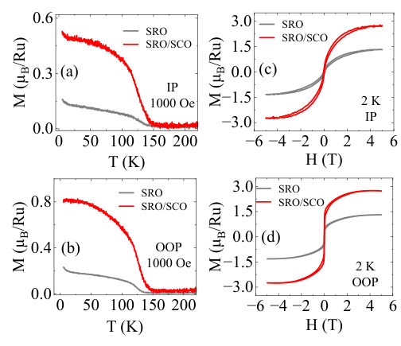
<figcaption class="paper-figure-caption"><b>Fig 3.</b> FIG. 2. M(T) plots for the SRO single layer recorded along the IP (a) and OOP (b) configurations. M(H) loops measured along the IP (c) and OOP (d) orientations for the bare SRO and the SRO/SCO bilyer films at 5 K</figcaption>
</figure>
<figure class="paper-figure-card">
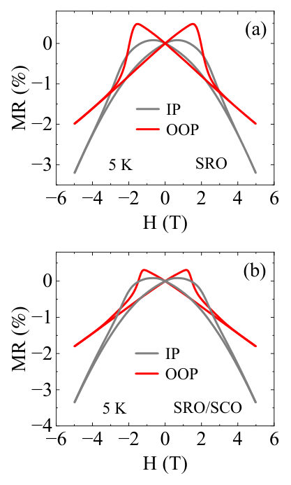
<figcaption class="paper-figure-caption"><b>Fig 4.</b> FIG. 4. Magnetoresistance vs field measured along OOP and IP directions at 5 K for the bare SRO film (a) and the SRO/SCO bilyer (b).</figcaption>
</figure>
<figure class="paper-figure-card">
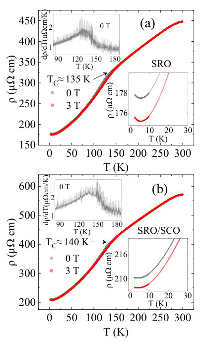
<figcaption class="paper-figure-caption"><b>Fig 5.</b> FIG. 5. Temperature dependence of the resistivity of the bare SRO film (a) and SRO/SCO bilayer (b) in the presence of different magnetic fields (0 T and 3 T). Insets: (upper) TC determined by the dR/dT of the zero-field ρ(T) curves, (lower) zoom of the low-temperature region of (a) and (b).</figcaption>
</figure>
</div>

<p><strong>Summary.</strong> The study investigates the $   ext{SrRuO}_3/   ext{SrCuO}_2$ heterostructure to control magnetism and electron transport by exploiting structural mismatch. The interface acts as a critical knob, significantly boosting magnetization and anisotropy while simultaneously stabilizing the electronic state against disorder-induced quantum scattering. This confirms that interfacial engineering is a powerful tool for realizing novel functionalities in oxide electronics.</p>
<p><strong>Why it may be interesting.</strong> This work demonstrates how engineered interfaces can act as powerful tuners for fundamental electronic properties in strongly correlated oxides, offering insights into interfacial charge transfer mechanisms that are relevant to emergent phenomena in condensed matter physics.</p>
<details>
<summary>Detailed structure</summary>
<p><strong>Main problem.</strong> The study investigates how structural mismatch at an interface can be used to control both the magnetic ordering and the electronic transport properties in oxide heterostructures.</p>
<p><strong>Main result.</strong> The nonisostructural SrRuO3/SrCuO2 interface significantly enhances magnetization and perpendicular magnetic anisotropy while simultaneously suppressing low-temperature disorder-induced resistivity upturns, leading to Fermi-liquid behavior.</p>
<p><strong>Method.</strong> The research combines structural characterization (XRD, XRR) with comprehensive measurements of magnetism (SQUID-VSM) and electronic transport (resistivity $\rho(T)$ and Anomalous Hall Effect analysis).</p>
<p><strong>Model / system.</strong> The physical system is a heterostructure composed of an itinerant ferromagnetic metal ($    ext{SrRuO}_3$) interfaced with a planar antiferromagnetic insulator ($    ext{SrCuO}_2$). The interface forces structural changes, such as $\text{RuO}_6$ octahedral to $\text{RuO}_5$ pyramidal coordination.</p>
<p><strong>Key observables.</strong> Saturation magnetization ($M_S$), effective anisotropy constant ($K_{	ext{eff}}$), temperature-dependent resistivity ($
ho(T)$), and the anomalous Hall coefficient ($eta$).</p>
<p><strong>Important parameters / regimes.</strong> Low temperatures (down to 2 K) are crucial for observing quantum corrections; enhanced $M_S$ ($\approx 2.7 \mu_B/\text{Ru}$) and $K_{	ext{eff}}$ enhancement are key metrics.</p>
<p><strong>Assumptions / limitations.</strong> The observed changes in transport properties (e.g., suppression of $\rho(T)$ upturn) are directly attributable to the interfacial electronic structure modification, such as charge transfer stabilizing a high-spin state.</p>
<p><strong>Figures summary.</strong> Figures show XRD scans confirming structural quality; magnetization loops demonstrate enhanced $M_S$ and PMA in the bilayer; resistivity plots compare bare SRO (showing low-T upturn) versus SRO/SCO (showing $\rho \propto T^2$).</p>
<p><strong>Paper structure.</strong> The paper systematically presents evidence: first, structural confirmation of the interface; second, magnetic measurements showing enhancement; third, transport analysis demonstrating suppression of quantum corrections and enhanced AHE contributions.</p>
</details>
<details>
<summary>Abstract</summary>
<p>Heterointerfaces between structurally dissimilar oxides provide a platform to exploit the interfacial mismatch in the lattice and electronic degrees of freedom to realize emergent functionalities and tunable physical properties with potential applications in oxide electronics. Here, we investigate the magnetic and electronic transport properties of symmetry-mismatched SrRuO$_3$ (SRO)/SrCuO$_2$ (SCO) heterostructure, in which a 4-nm-thick itinerant ferromagnetic metal SRO is interfaced with a planar-type antiferromagnetic insulator SCO, in comparison with a reference SRO (4 nm) film. While both the bare SRO and SRO/SCO bilayer exhibit perpendicular magnetic anisotropy (PMA), the SRO/SCO bilayer shows a pronounced enhancement in the saturation magnetization (M$_S$ $\approx$ 2.7 $μ_B$/Ru) and effective anisotropy constant (K$_{\mathrm{eff}}$ $\approx$ 2.13 $\times$ 10$^6$ erg/cc) relative to the bare SRO film (M$_S$ $\approx$ 1.3 $μ_B$/Ru and K$_{\mathrm{eff}}$ $\approx$ 5.25 $\times$ 10$^5$ erg/cc). Interestingly, the low-temperature resistivity upturn below 5 K arising from disorder-induced quantum corrections in bare SRO is strongly suppressed in SRO/SCO, and it exhibits Fermi-liquid-like transport ($ρ\propto T^2$) down to 2 K. Analysis of the anomalous Hall effect (AHE) reveals dominant intrinsic Berry-curvature driven electron transport in both samples, with enhanced intrinsic and skew-scattering contributions in the SRO/SCO bilayer, indicating the critical role of the interface in modifying the electronic band structure near the Fermi level. Our results demonstrate that the interface acts as an effective control knob, concurrently enhancing the magnetization, PMA, and intrinsic scattering contribution to the AHE in the SRO/SCO heterostructure, while suppressing the disorder-driven quantum corrections to transport behavior observed in the bare SRO film.</p>
</details>
<p><sub><a href="#top">↑ back to top</a></sub></p>

<p><a id="paper-2606.15799"></a></p>
<h3 id="machine-learning-topological-order-from-defect-partition-functions"><a href="http://arxiv.org/abs/2606.15799v1">Machine Learning Topological Order from Defect Partition Functions</a></h3>
<p><strong>Authors:</strong> Kazem Bitaghsir Fadafan, Wei Cui, Babak Haghighat, Shailesh Lal<br>
<strong>Type:</strong> theory · <strong>Category:</strong> disordered systems and neural networks · <strong>PDF:</strong> <a href="https://arxiv.org/pdf/2606.15799v1">https://arxiv.org/pdf/2606.15799v1</a><br>
<strong>Analysis basis:</strong> full PDF text, analyzed in chunks
<strong>Topic relevance:</strong> <code>methods for driven-dissipative</code> <strong>3/5</strong> · <code>Keldysh / 2PI / non-Gaussian methods</code> <strong>1/5</strong> · <code>analog quantum simulation</code> <strong>1/5</strong> · <code>driven-dissipative phase transition</code> <strong>1/5</strong></p>
<div class="figure-strip-hint">↔ Scroll figures horizontally</div>
<div class="paper-figures-scroll">
<figure class="paper-figure-card">
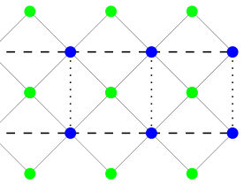
<figcaption class="paper-figure-caption"><b>Fig 1.</b> Figure 1: Geometric configuration of the two-dimensional Ising model on the primary lattice Λ (blue sites) and its corresponding dual lattice ˜Λ (green sites). Dashed and dotted lines denote horizontal and vertical edges on Λ, respectively. Each dual site ˜p ∈˜Λ is positioned at the center of its associated primary plaquette, shifting it by (+1/2, +1/2) relative to the primary site p ∈Λ, which effectively rotates the dual edge axes by 45◦relative to the primary lattice.</figcaption>
</figure>
<figure class="paper-figure-card">
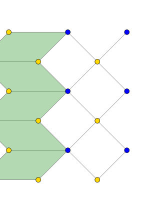
<figcaption class="paper-figure-caption"><b>Fig 2.</b> Figure 2: Lattice realization of the non-invertible Kramers-Wannier duality defect line. The seam acts as a topological interface matching the primary Hilbert space H (blue sites) with the dual Hilbert space ˆH (yellow sites), enforcing the non-local duality-twisted boundary conditions across the cycle.</figcaption>
</figure>
<figure class="paper-figure-card">
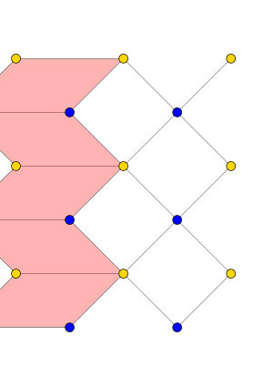
<figcaption class="paper-figure-caption"><b>Fig 3.</b> Figure 3: Lattice configuration of a vertical Z2 spin-flip defect line. The defect is implemented by executing a local gauge transformation that systematically inverts the signs of the vertical bond couplings (Ky 7→−Ky) along the highlighted red cut-line switching ferromagnetic interactions across the bond to anti-ferromagnetic. Blue dots represent the primary lattice sites and yellow dots are the dual lattice sites</figcaption>
</figure>
<figure class="paper-figure-card">
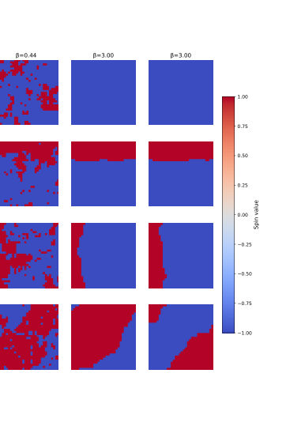
<figcaption class="paper-figure-caption"><b>Fig 4.</b> Figure 4: Monte Carlo samples of the Ising model on a 64 × 64 lattice, collected from the four spin-flip defect sectors corresponding to Z1 1,1, Zψ 1,ψ, Zψ ψ,1 and Z1 ψ,ψ, where we are reading the rows top to bottom . Higher temperatures are shown in columns to the left. The snapshots provide some visual indication of how the antiferromagnetic seam insertion, dominant at low temperatures is negligible in the high temperature limit.</figcaption>
</figure>
<figure class="paper-figure-card">
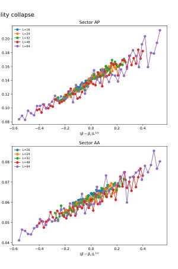
<figcaption class="paper-figure-caption"><b>Fig 5.</b> Figure 5: Rescaled susceptibility computed near criticality for the Ising model at varying β, L. The plots coalesce over each other, a feature of scale invariance near criticality.</figcaption>
</figure>
</div>

<p><strong>Summary.</strong> The paper introduces an innovative machine learning approach using Restricted Boltzmann Machines (RBMs) to extract the underlying Topological Quantum Field Theory structure from the critical 2D Ising model. By training RBMs on lattice configurations, the authors successfully map classical partition functions onto quantum wavefunctions whose overlaps correctly predict fundamental topological invariants like the modular S-matrix.</p>
<p><strong>Why it may be interesting.</strong> This work provides a concrete, data-driven methodology—using deep learning—to tackle fundamental problems in condensed matter theory concerning emergent quantum order and topological phases, bridging statistical mechanics with advanced ML techniques.</p>
<details>
<summary>Detailed structure</summary>
<p><strong>Main problem.</strong> The research aims to develop a machine learning framework to extract the topological order inherent in the 2D Ising model from its defect partition functions.</p>
<p><strong>Main result.</strong> The authors successfully demonstrated that Restricted Boltzmann Machines (RBMs) can learn representations whose overlaps reproduce the expected modular S-matrix of the Ising Topological Quantum Field Theory (TQFT).</p>
<p><strong>Method.</strong> They train RBMs on Monte Carlo samples from the critical 2D Ising model, using a component-wise square-root map to generate candidate wavefunctions for the TQFT.</p>
<p><strong>Model / system.</strong> The physical system is the two-dimensional Ising model defined on a torus ($T^2$), analyzed at its critical point. The theoretical framework connects this lattice statistical mechanics problem to $(2+1)$-dimensional Ising TQFTs via duality transformations and defect insertions.</p>
<p><strong>Key observables.</strong> Modular S-matrix elements, partition functions $Z_{L_1 L_2}$, Binder cumulant ($U_4(m)$), and RBM reconstruction error ($   ext{Erecon}$).</p>
<p><strong>Important parameters / regimes.</strong> Critical coupling constant ($K_c$), temperature/coupling parameters, and the modular parameter $ au$.</p>
<p><strong>Assumptions / limitations.</strong> The primary assumption is that the underlying physics (Ising TQFT) can be accurately captured by training an RBM on classical lattice samples. A limitation noted is the inability to learn complex phase information.</p>
<p><strong>Figures summary.</strong> Figures illustrate the geometric relationship between dual lattices, heatmaps of weight covariance matrices ($\Sigma = WWT$) showing defect-induced couplings, and visualizations of eigenmodes derived from the learned Hamiltonian.</p>
<p><strong>Paper structure.</strong> The paper progresses by reviewing lattice duality (KW), introducing defects via gauge fields, establishing connections to CFT characters using transfer matrices, and finally proposing the RBM mapping technique for computational extraction of topological invariants.</p>
</details>
<details>
<summary>Abstract</summary>
<p>We introduce a machine learning framework for extracting Ising topological order from defect partition functions of the two-dimensional Ising model on a torus. Restricted Boltzmann Machines (RBMs) are trained on Ising model data sampled at criticality across topological sectors. We take a component-wise square-root map of the learned distributions which naturally produces candidate wavefunctions for the (2+1)-dimensional Ising TQFT. As a nontrivial consistency check, we extract the modular S-matrix from overlaps of the resulting states and recover the expected Ising modular data. Our results demonstrate that neural network representations can capture both critical fluctuations and emergent topological structure, providing a data-driven route from lattice statistical mechanics to topological quantum field theory.</p>
</details>
<p><sub><a href="#top">↑ back to top</a></sub></p>

<p><a id="paper-2606.16309"></a></p>
<h3 id="neural-network-inverse-design-of-nanophotonic-scintillators"><a href="http://arxiv.org/abs/2606.16309v1">Neural network inverse design of nanophotonic scintillators</a></h3>
<p><strong>Authors:</strong> Nathan Regev, Avner Shultzman, Francis Loignon-Houle, Charles Roques-Carmes, Ido Kaminer<br>
<strong>Type:</strong> theory · <strong>Category:</strong> numerical methods · <strong>PDF:</strong> <a href="https://arxiv.org/pdf/2606.16309v1">https://arxiv.org/pdf/2606.16309v1</a><br>
<strong>Analysis basis:</strong> full PDF text, analyzed in chunks
<strong>Topic relevance:</strong> <code>methods for driven-dissipative</code> <strong>3/5</strong> · <code>Keldysh / 2PI / non-Gaussian methods</code> <strong>1/5</strong> · <code>driven-dissipative phase transition</code> <strong>1/5</strong> · <code>interference shaping light</code> <strong>1/5</strong></p>
<div class="figure-strip-hint">↔ Scroll figures horizontally</div>
<div class="paper-figures-scroll">
<figure class="paper-figure-card">
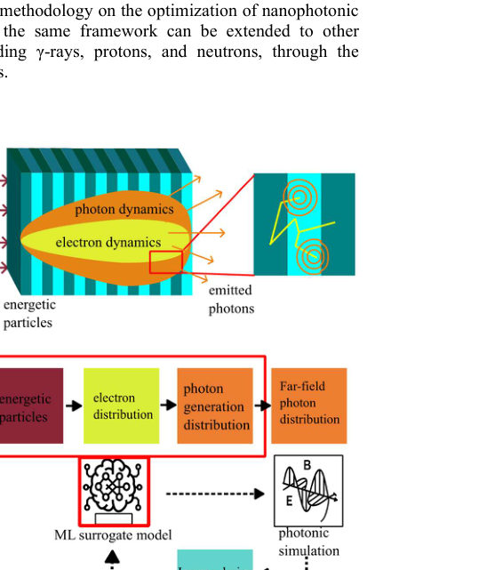
<figcaption class="paper-figure-caption"><b>Fig 1.</b> Figure 1: Physics-informed neural network (PINN) enabling inverse design of scintillators. (a) A wide range of physical processes are triggered following the interaction of an X-ray photon or other energetic particles with matter – all part of the complexity of scintillator science. These processes are typically modeled by probabilistic Monte Carlo (MC) simulations such as</figcaption>
</figure>
<figure class="paper-figure-card">
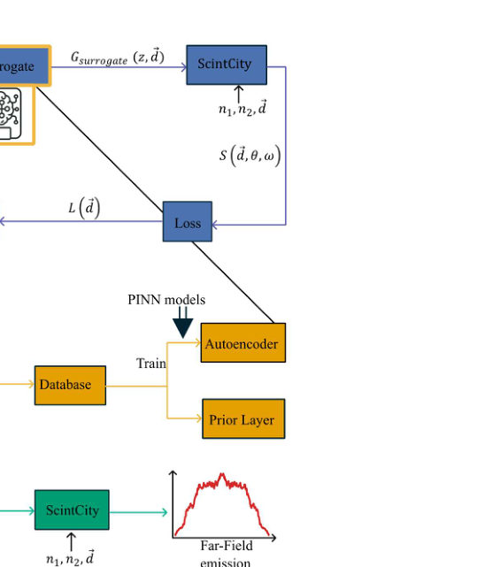
<figcaption class="paper-figure-caption"><b>Fig 2.</b> Figure 2: The scintillator physics-informed neural network (SPINN) design for optimization of layered structures. (a) Optimization process. The forward model applies the scintillation surrogate module on the layers vector dሬ⃗, yielding the estimated photon emission density function G൫z,dሬ⃗൯. Based on this density, ScintCity27 estimates the emission far-field angular intensity distribution. This intensity is converted into a scalar loss according to the figure-of-merit, used by optimization procedure to update the layers vector. The optimized layer structure is returned upon convergence of the process. (b) Neural network training. To train the surrogate model, we begin by running multiple MC...</figcaption>
</figure>
<figure class="paper-figure-card">
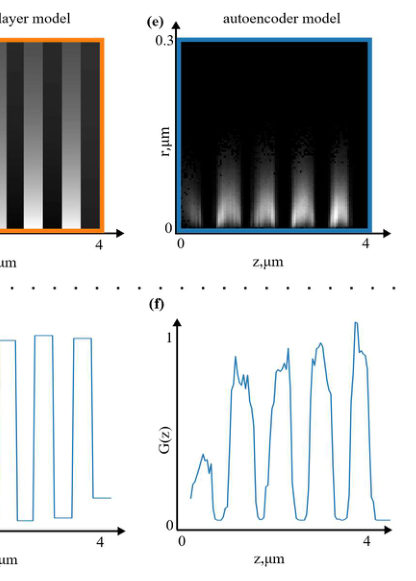
<figcaption class="paper-figure-caption"><b>Fig 3.</b> Figure 3: The scintillation surrogate model of SPINN, performance evaluation. Top row: Spatial distribution of photon emitters from MC simulations, showing the mean emission density - 𝐺ௗ⃗(𝑧, 𝑟). Bottom row: The sum over the radial coordinates 𝐺෨(𝑧) = ∑𝐺ௗ⃗(𝑧, 𝑟) ௥ . Comparing the MC simulation, which is closest to the ground truth (a,b), with the prior layer model (c,d), and the autoencoder PINN model (e,f). While the autoencoder model is noisier, and fails to capture the smooth transition between layers, it captures well several features that deviate from the prior layer model, including inter-layer changes (like the rise in the first layer), and the curved &quot;onion&quot; dip in emission near the...</figcaption>
</figure>
<figure class="paper-figure-card">
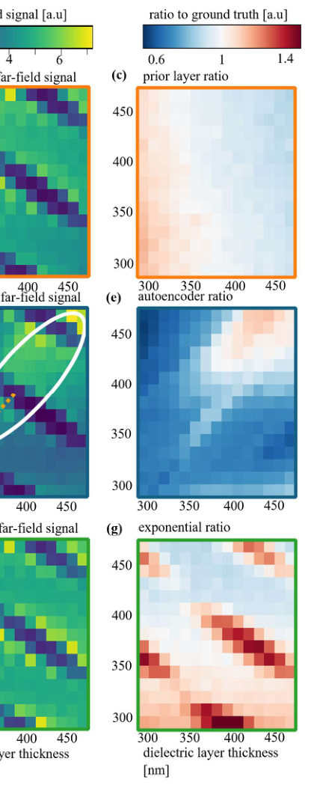
<figcaption class="paper-figure-caption"><b>Fig 4.</b> Figure 4: Analysis of the optimization process, exemplified on periodic layered scintillators. Scintillator performance (total far- field signal) summarized in a map as a function of the thicknesses of the two layers in the periodic structure. (a) Ground truth MC simulation as shown in Figure 2(c). Dotted horizontal lines represent optimization constraints i.e., constant scintillator thickness. white arrows denote the points of highest signal, indicating that the optimal signal is not monotonic with scintillator thickness and in certain contexts can even decrease for thicker structures. (b,c) Prior layer forward model performance and ratio to MC ground truth. (d,e) Autoencoder model and its...</figcaption>
</figure>
<figure class="paper-figure-card">
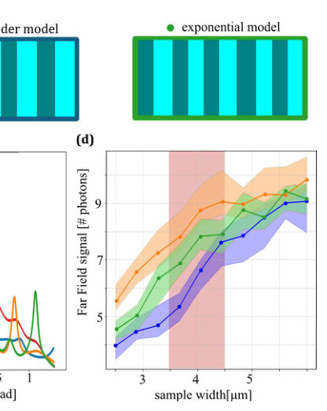
<figcaption class="paper-figure-caption"><b>Fig 5.</b> Figure 5: Example SPINN optimization results. (a) Optimized layered scintillators, found using the different far field models. (b) improvement ratio histogram between new models and exponential model. The histogram was calculated by preforming optimization using 3 models on the same initial layer structure and compared the resulting far field signal. The autoencoder (blue histogram) model overall performed worse than previous model with median optimized signal (red dotted line) being 85% of exponential model. The layered structure (orange histogram) improved the median optimized by 15%. (c) Comparison of the far field angular intensity distribution for each scintillator design. The...</figcaption>
</figure>
</div>

<p><strong>Summary.</strong> The paper introduces a Physics-Informed Neural Network (SPINN) framework to overcome the computational bottleneck in designing scintillators. By replacing slow, non-differentiable Monte Carlo simulations with a differentiable neural network surrogate, it enables efficient gradient-based inverse design optimization for novel nanophotonic structures. This breakthrough accelerates materials discovery by linking structure geometry directly to desired optical performance.</p>
<p><strong>Why it may be interesting.</strong> This work represents a powerful application of ML to solve complex physical simulation bottlenecks. The use of PINNs to bridge stochastic physics (electron transport) with deterministic optics is highly relevant for modeling open quantum systems where full time-evolution simulations are intractable.</p>
<details>
<summary>Detailed structure</summary>
<p><strong>Main problem.</strong> Scintillator development is limited by complex, stochastic physics modeled by non-differentiable Monte Carlo simulations, preventing efficient machine learning optimization.</p>
<p><strong>Main result.</strong> The authors successfully demonstrated an end-to-end differentiable inverse design framework for nanophotonic scintillators using a Physics-Informed Neural Network (SPINN).</p>
<p><strong>Method.</strong> They replaced computationally expensive and non-differentiable Monte Carlo simulations with PINN surrogate models to learn the relationship between structure geometry and light emission.</p>
<p><strong>Model / system.</strong> The system is a nanophotonic scintillator, often implemented as multilayer stacks. The model involves coupling the SPINN (surrogate for electron cascade) with a differentiable photonic simulator to optimize structural parameters.</p>
<p><strong>Key observables.</strong> Far-field signal intensity distribution, total light yield ($L(\vec{d})$), and spatial photon emission profiles ($
ho(z, r)$).</p>
<p><strong>Important parameters / regimes.</strong> Layer thicknesses (nanoscale dimensions), refractive indices, X-ray energy (e.g., 8 keV), and the number of latent parameters ($K$).</p>
<p><strong>Assumptions / limitations.</strong> The primary assumption is that a PINN can accurately surrogate the complex physics, though comparisons showed that explicit physical constraints (Prior Layer Model) outperformed purely data-driven autoencoders.</p>
<p><strong>Figures summary.</strong> Figures illustrate the optimization flow using SPINN, comparing the predicted signal from different models (Autoencoder vs. Prior Layer Model vs. Exponential Model) against Monte Carlo ground truth across varying sample thicknesses.</p>
<p><strong>Paper structure.</strong> The paper progresses by first identifying the modeling gap (MC limitations), proposing the PINN surrogate framework, detailing the training methodology using self-supervised learning on simulated data, and finally validating the approach through inverse design optimization for specific scintillators.</p>
</details>
<details>
<summary>Abstract</summary>
<p>Scintillators are materials converting high-energy radiation into optical light, essential in a range of technologies such as medical imaging systems and security scanners. Scintillator development and optimization have remained limited by the complexity of their underlying physics, involving stochastic cascades of electron-electron, electron-phonon, and electron-photon interactions. Such processes are typically modeled by non-differentiable Monte Carlo simulations, limiting the applicability of machine learning for scintillator development. Here we present a physics-informed neural network that learns the scintillation cascade process from the incident high-energy particle to photon emission, substantially accelerating scintillator design and optimization. Combining this neural network with photonic simulations enables end-to-end differentiable optimization of the scintillator geometry. This allows us to optimize for arbitrary figures of merit, such as specific target emission patterns.. We demonstrate the concept and characterize it relative to previous approaches by inverse design of nanophotonic scintillators for X-ray imaging.</p>
</details>
<p><sub><a href="#top">↑ back to top</a></sub></p>

<p><a id="paper-2606.16948"></a></p>
<h3 id="the-optimal-rate-function-in-covariant-quantum-state-tomography"><a href="http://arxiv.org/abs/2606.16948v1">The Optimal Rate Function in Covariant Quantum State Tomography</a></h3>
<p><strong>Authors:</strong> Arick Grootveld, Alexander Maloney, Jason Pollack, Peixue Wu<br>
<strong>Type:</strong> theory · <strong>Category:</strong> other · <strong>PDF:</strong> <a href="https://arxiv.org/pdf/2606.16948v1">https://arxiv.org/pdf/2606.16948v1</a><br>
<strong>Analysis basis:</strong> full PDF text, analyzed in chunks
<strong>Topic relevance:</strong> <code>quantum measurements</code> <strong>3/5</strong> · <code>entanglement &amp; information structure</code> <strong>2/5</strong> · <code>measurement-induced transitions</code> <strong>1/5</strong></p>
<div class="figure-strip-hint">↔ Scroll figures horizontally</div>
<div class="paper-figures-scroll">
<figure class="paper-figure-card">
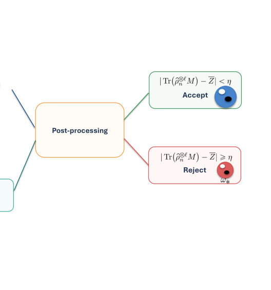
<figcaption class="paper-figure-caption"><b>Fig 1.</b> Fig. 1: Non-covariant protocol almost achieving the relative entropy as its rate function</figcaption>
</figure>
<figure class="paper-figure-card">

<figcaption class="paper-figure-caption"><b>Fig 2.</b> Fig. 2: Block diagonal form of a covariant POVM density in the Schur basis.</figcaption>
</figure>
</div>

<p><strong>Summary.</strong> This paper establishes the theoretical limit on how accurately an unknown quantum state can be estimated from repeated measurements. It proves that among all basis-independent (covariant) protocols, a specific rate function derived from Schur sampling achieves the maximum possible exponential decay rate for estimation error. This result refines our understanding of quantum information limits by comparing it to the standard relative entropy.</p>
<p><strong>Why it may be interesting.</strong> This work provides a rigorous mathematical framework for quantifying the fundamental limits of quantum state characterization, which is crucial for understanding measurement-induced information loss in quantum systems.</p>
<details>
<summary>Detailed structure</summary>
<p><strong>Main problem.</strong> The central problem is determining the optimal measurement protocol for quantum state tomography, which involves estimating an unknown quantum state $\rho$ from multiple copies of itself.</p>
<p><strong>Main result.</strong> The authors prove that among all covariant tomography protocols, a specific rate function derived from Keyl's Schur sampling method achieves the maximum possible large-deviation exponent. This optimal rate is shown to be bounded by the standard quantum relative entropy $D(\sigma|\rho)$.</p>
<p><strong>Method.</strong> The analysis employs Large Deviation Principles (LDP) theory to characterize the exponential decay rate of measurement probabilities, utilizing tools from representation theory (Schur polynomials) and covariance constraints.</p>
<p><strong>Model / system.</strong> The system is a quantum state $\rho$ on a $d$-dimensional Hilbert space. The estimation process involves measuring tensor products of copies ($\rho^{\otimes n}$) using protocols constrained by covariance under unitary rotations.</p>
<p><strong>Key observables.</strong> Rate function $I(\sigma|\rho)$, Quantum Relative Entropy $D(\sigma|\rho)$, and Keyl's rate function $S_{Keyl}(\sigma|\rho)$.</p>
<p><strong>Important parameters / regimes.</strong> The number of copies $n$, the dimension $d$, and the limiting spectral distribution $x$ (from $\lambda(n)/n \to x$).</p>
<p><strong>Assumptions / limitations.</strong> The analysis heavily relies on assuming that the measurement protocol satisfies a Large Deviation Principle (LDP) and, for the optimal result, that the protocol is covariant.</p>
<p><strong>Figures summary.</strong> Figures illustrate how non-covariant protocols yield rate functions below the theoretical maximum, while Figure 2 shows the block diagonal structure of the POVM density in the Schur basis.</p>
<p><strong>Paper structure.</strong> The paper builds from establishing the general upper bound using relative entropy (Theorem 1.1), then focusing on covariant protocols, proving Keyl's conjecture by characterizing these protocols via representation theory (Schur basis), and finally comparing this optimal rate to other divergences.</p>
</details>
<details>
<summary>Abstract</summary>
<p>The problem of quantum tomography is to estimate an unknown quantum state $ρ$ from a measurement of $n$ copies of $ρ$. One can ask which tomography protocol, i.e.\ which choice of multi-copy measurement, gives the best possible estimate of $ρ$. To do so, we characterize tomography protocols by their \emph{rate function}, which governs the exponential rate at which a protocol assigns probability to a particular estimate $σ$ of the true state $ρ$. This rate function is a quantum mechanical generalization of the classical relative entropy between the true state and its estimate, and depends on the choice of protocol. It is bounded by the quantum relative entropy, and we show that this bound is sharp: for any $ρ$ and $σ$ we construct a family of protocols whose rate functions converge to the quantum relative entropy $D(σ\|ρ)$.   We consider the family of covariant tomography protocols; these are the basis independent state estimation schemes that assume no prior information about $ρ$ and $σ$. Keyl described a specific tomography protocol based on Schur sampling, and conjectured that among all covariant tomography protocols it has the largest possible rate function for all $σ$ and $ρ$. We prove this conjecture. The resulting rate function is an annealed version of quantum relative entropy, due to the cost of learning the eigenbasis in covariant quantum state tomography.</p>
</details>
<p><sub><a href="#top">↑ back to top</a></sub></p>

<p><a id="paper-2606.15230"></a></p>
<h3 id="benchmarking-quantum-extreme-learning-based-on-gaussian-boson-sampling"><a href="http://arxiv.org/abs/2606.15230v1">Benchmarking Quantum Extreme Learning based on Gaussian Boson Sampling</a></h3>
<p><strong>Authors:</strong> Daniel Montesinos, Gian Luca Giorgi, Roberta Zambrini<br>
<strong>Type:</strong> theory · <strong>Category:</strong> quantum information and computing · <strong>PDF:</strong> <a href="https://arxiv.org/pdf/2606.15230v1">https://arxiv.org/pdf/2606.15230v1</a><br>
<strong>Analysis basis:</strong> full PDF text, analyzed in chunks
<strong>Topic relevance:</strong> <code>interference shaping light</code> <strong>3/5</strong> · <code>analog quantum simulation</code> <strong>1/5</strong> · <code>quantum measurements</code> <strong>1/5</strong></p>
<div class="figure-strip-hint">↔ Scroll figures horizontally</div>
<div class="paper-figures-scroll">
<figure class="paper-figure-card">

<figcaption class="paper-figure-caption"><b>Fig 1.</b> FIG. 1: Schematic overview of the QELM based on GBS. External input samples xraw j undergo classical preprocessing (normalization and, when required, reduction via PCA) to generate the classical feature vector xj ∈Rdx. These features modulate the squeezing strengths and phases applied to each of the M optical modes, producing an input-dependent Gaussian state. This state is then processed by a linear interferometer ˆU(xj), and photon-number-resolving detection is used to extract a set of quantum features Oij(xj), corresponding to the probabilities of selected Fock outcomes. Finally, the resulting feature vector is fed into a classical Ridge regression layer, which produces the prediction...</figcaption>
</figure>
<figure class="paper-figure-card">

<figcaption class="paper-figure-caption"><b>Fig 2.</b> FIG. 2: a) Decision Boundaries: QELM using Fock probabilities on the two-moon (top) and concentric circles (bottom) binary classification tasks. The results are shown for data noise levels (0.1 and 0.25), showcasing the model’s ability to maintain separation despite increasing noise. The background colour corresponds to the model prediction, while the coloured dots indicate the correct class. Dots with a yellow border correspond to misclassified points. b) Test Set Accuracy vs. Noise Level: This panel plots the classification accuracy on the test set against the noise level for all classical and quantum learning models on the Circles and Moons tasks. Points are the median across 10...</figcaption>
</figure>
<figure class="paper-figure-card">

<figcaption class="paper-figure-caption"><b>Fig 3.</b> FIG. 3: a) Comparative Performance and Resource Analysis for Different Quantum and Classical Models (see color legend): Presents the test(bars)/train(dots) set accuracy (left y-axis) and number of trainable parameters (right y-axis, red cross markers) for two different image classification datasets (MNIST, OrganC). Points/bar height are the median across 10 repetitions with different random seeds, and error bars correspond to the 25th and 75th percentiles. From left to right, the quantum models correspond to increasing output feature dimensionality (see App. C). b) Noisy Quantum Features Performance: Accuracies of quantum models when Gaussian random noise is introduced to the quantum...</figcaption>
</figure>
<figure class="paper-figure-card">

<figcaption class="paper-figure-caption"><b>Fig 4.</b> FIG. 4: Different encoding strategies: Performance Comparison on MNIST task using only the first six PCA components to encode information in the GBS device with different strategies. ESϕ, ESr, EU</figcaption>
</figure>
<figure class="paper-figure-card">

<figcaption class="paper-figure-caption"><b>Fig 5.</b> FIG. 5: Scaling of the output feature dimension for the different measurement schemes considered in this work as a function of the number of optical modes M. For comparison, the linear scaling of the classical ELM feature space with respect to its number of internal neurons is also shown.</figcaption>
</figure>
</div>

<p><strong>Summary.</strong> This paper proposes using Gaussian Boson Sampling (GBS) within a Quantum Extreme Learning Machine (QELM) framework to perform classification tasks. It shows that encoding classical data into the interferometer's unitary matrix and squeezing parameters generates highly nonlinear, potentially intractable quantum features. The results demonstrate competitive performance against classical methods while maintaining resource efficiency for near-term photonic devices.</p>
<p><strong>Why it may be interesting.</strong> It directly applies advanced quantum optics techniques (GBS, squeezed states) to a machine learning problem, providing concrete benchmarks for near-term photonic quantum computation feasibility.</p>
<details>
<summary>Detailed structure</summary>
<p><strong>Main problem.</strong> Developing resource-efficient quantum feature maps for machine learning by leveraging Gaussian Boson Sampling (GBS) to encode classical data into complex quantum states.</p>
<p><strong>Main result.</strong> The proposed Quantum Extreme Learning Machine (QELM) achieves competitive classification accuracy compared to classical baselines while utilizing fewer trainable parameters, with photon-number sampling providing the best performance.</p>
<p><strong>Method.</strong> Classical inputs are jointly encoded into squeezing parameters and the interferometer unitary matrix ($\hat{U}$), generating quantum features via Photon Number Resolving (PNR) detection, which are then read out using Ridge regression.</p>
<p><strong>Model / system.</strong> The physical platform is Gaussian Boson Sampling (GBS) implemented with a linear optical interferometer fed by squeezed vacuum states. The model is a QELM that maps classical data $\mathbf{x}_j$ to quantum feature expectation values $O_{ij}(\mathbf{x}_j)$.</p>
<p><strong>Key observables.</strong> Photon number sampling probabilities ($\hat{\Pi}_n$), photon-number moment observables, and quadrature covariance observables.</p>
<p><strong>Important parameters / regimes.</strong> Number of optical modes ($M$, e.g., 5 or 12); noise levels (e.g., 0.1 to 0.25).</p>
<p><strong>Assumptions / limitations.</strong> The GBS output probabilities are conjectured to be classically hard to compute; the encoding strategy allows data embedding in both squeezing parameters and the interferometer unitary.</p>
<p><strong>Figures summary.</strong> Figures illustrate the QELM workflow (Fig. 1), decision boundaries on synthetic tasks like 'two moons' (Fig. 2a), and test set accuracy vs. noise level for various models (Fig. 2b).</p>
<p><strong>Paper structure.</strong> The paper details the QELM architecture, describing input encoding via squeezing/unitary decomposition (CS decomposition), defining feature extraction using PNR detection, benchmarking performance against classical ELMs on tasks like moons and MNIST, and analyzing resource scaling.</p>
</details>
<details>
<summary>Abstract</summary>
<p>Reservoir models offer a hardware-efficient learning paradigm for noisy intermediate-scale quantum devices by exploiting untrained quantum dynamics as a fixed feature map and restricting optimization to a simple classical readout layer. We propose a quantum extreme learning machine implemented using gaussian boson sampling and an encoding strategy that achieves high classification accuracy while reducing optical resource requirements. Classical inputs are jointly encoded in the squeezing parameters and in the interferometer unitary, enabling sampling-based, highly nonlinear feature maps while leveraging large-scale GBS output statistics, which are conjectured to be classically intractable. We systematically compare multiple families of quantum features accessible in the same setup and find that photon-number sampling probabilities provide the best performance, consistent with their higher effective feature dimensionality. Finally, we benchmark against classical nonlinear baselines and analyse robustness under noisy scenarios, showing competitive performance with fewer trainable parameters and indicating practical promise for near-term photonic implementations.</p>
</details>
<p><sub><a href="#top">↑ back to top</a></sub></p>

<p><a id="paper-2606.16632"></a></p>
<h3 id="quantum-enhancement-and-doppler-suppression-of-kasevich-chu-atom-interferometer-with-motional-squeezing-states"><a href="http://arxiv.org/abs/2606.16632v1">Quantum enhancement and Doppler suppression of Kasevich-Chu atom interferometer with motional squeezing states</a></h3>
<p><strong>Authors:</strong> Dongyang Yu, Yubin Wang, Fong En Oon, Qiang Lin<br>
<strong>Type:</strong> theory · <strong>Category:</strong> other · <strong>PDF:</strong> <a href="https://arxiv.org/pdf/2606.16632v1">https://arxiv.org/pdf/2606.16632v1</a><br>
<strong>Analysis basis:</strong> full PDF text, analyzed in chunks
<strong>Topic relevance:</strong> <code>quantum measurements</code> <strong>3/5</strong> · <code>entanglement &amp; information structure</code> <strong>1/5</strong> · <code>measurement-induced transitions</code> <strong>1/5</strong></p>
<div class="figure-strip-hint">↔ Scroll figures horizontally</div>
<div class="paper-figures-scroll">
<figure class="paper-figure-card">

<figcaption class="paper-figure-caption"><b>Fig 1.</b> FIG. 1. In the ”Ideal” scenario, the global maximum CFI of population measurement ({ ˆSz}) and the corresponding opti- mal ratio rI({ ˆSz}) versus Γ.</figcaption>
</figure>
<figure class="paper-figure-card">

<figcaption class="paper-figure-caption"><b>Fig 2.</b> FIG. 2. (color online) Evolution of max(F S C ({ ˆSz})) ((a1,b1), log scale), optimal ratio rS({ ˆSz}) (a2,b2) and the corre- sponding QFI F S Q (a3,b3) versus squeezing parameters (β, θ) for the ”Ideal” (S = I) and ”Doppler” (S = D) scenario. The black dashed radial lines (concentric circle) correspond to θ/π = (0, 0.3, 0.5, 0.7, 1.0, 1.3, 1.7, 2) (β = 3.6). Here δ0 = −Er, ℏΩ/Er = 20, ωT = 2, ErT/ℏ= 200.</figcaption>
</figure>
<figure class="paper-figure-card">

<figcaption class="paper-figure-caption"><b>Fig 3.</b> FIG. 3. (color online) Evolution of max(F S C ({ˆz, ˆSz})) ((a1,b1), log scale), rI({ˆz, ˆSz}) (a2), and the corresponding QFI F S Q (a3,b3) versus squeezing parameters (β, θ) for the ”Ideal” (S = I) and ”Doppler” (S = D) scenario. Partic- ularly, rD({ˆz, ˆSz}) = rI({ˆz, ˆSz}) is assumed for simplicity, as discussed in the main text. Panel (b2) shows the opti- mal squeezing βD opt (the red solid line in panels (b1,b2,b3)) versus θ (0 ≤θ ≤π is chosen) under ”Doppler” scenario. The black dashed radial lines (concentric circle) correspond to θ/π = (0, 0.3, 0.5, 0.7, 1.0, 1.3, 1.7, 2) (β = 3.6). Other pa- rameters are the same as in Fig. 2.</figcaption>
</figure>
<figure class="paper-figure-card">

<figcaption class="paper-figure-caption"><b>Fig 4.</b> FIG. 4. (color online) Under the joint measurement of population-position, max(F I,D C ({ˆz, ˆSz}))) (a1, b1), optimal control ratio rI({ˆz, ˆSz})) (a2, b2), and the fidelity F (a3, b3) are shown as functions of the squeezing parameters θ (with β = 3.6 fixed, panels (a1, a2, a3), see the black dashed cir- cles in Fig. 3) and β (with θ = θmax fixed, panels (b1, b2, b3)). Here, the red, blue, and magenta dashed curves (pen- tagram symbols) correspond to T ω = 0.32 (β = 3.6, θ = θmax = 1.25π), 2.0 (β = 3.6, θ = θmax = 1.7π), and 12.5 (β = 3.6, θ = θmax = 1.95π), respectively. In panels (a1,b1), the dashed (dotted) lines denote the ”Ideal” (”Doppler”) sce- nario. Other parameters are the same as...</figcaption>
</figure>
<figure class="paper-figure-card">

<figcaption class="paper-figure-caption"><b>Fig 5.</b> FIG. 5. (color online) Doppler shifts of QFI difference ∆FQ = F D Q −F I Q versus Rabi frequency Ωas ωT = 0.32 (a) and ωT = 12.5 (b). Here we set r = T1/T = 1/2 artificially. For the input MSS, θ = π is chosen where the Doppler broadening is the largest and β = (0, 1, 3) (dashed red, blue and magenta lines). Other parameters are the same as in Fig. 2.</figcaption>
</figure>
</div>

<p><strong>Summary.</strong> This paper theoretically analyzes Kasevich-Chu atom interferometers using motional squeezing states to boost measurement sensitivity. It rigorously compares performance under ideal conditions versus realistic Doppler broadening effects by calculating both Quantum and Classical Fisher Information for different measurement types. The key finding is that joint measurement of population and position provides a robust enhancement mechanism capable of overcoming significant Doppler suppression.</p>
<p><strong>Why it may be interesting.</strong> This work is highly relevant as it pushes quantum metrology into regimes where real-world noise sources like Doppler shifts are present, providing concrete guidance on how entanglement resources (MSS) can maintain high precision measurements.</p>
<details>
<summary>Detailed structure</summary>
<p><strong>Main problem.</strong> The study aims to enhance the sensitivity of Kasevich-Chu atom interferometers beyond the standard quantum limit while quantifying the detrimental effects of Doppler broadening.</p>
<p><strong>Main result.</strong> Joint measurement of population and position shows superior robustness, allowing quantum enhancement to dominate even in the presence of strong Doppler broadening effects. For population measurement alone, enhancements up to four times the semi-classical limit were achieved.</p>
<p><strong>Method.</strong> The authors systematically derived computational frameworks for both Quantum Fisher Information (QFI) and classical Fisher information (CFI) by analyzing two distinct measurement protocols: population measurement and joint population–position measurement.</p>
<p><strong>Model / system.</strong> The physical system is a Kasevich-Chu atom gravimeter utilizing cold atomic ensembles. The theoretical model incorporates the hybridization of internal and external atomic degrees of freedom, allowing for the use of Motional Squeezing States (MSS) as input states.</p>
<p><strong>Key observables.</strong> Quantum Fisher Information ($F_Q$) and Classical Fisher Information ($F_C$), sensitivity ($\delta g$), contrast ($C$).</p>
<p><strong>Important parameters / regimes.</strong> Squeezing strength ($eta$), squeezing angle ($   heta$), interrogation time ratio ($r=T_1/T$), Doppler effect magnitude.</p>
<p><strong>Assumptions / limitations.</strong> The analysis compares 'Ideal' scenarios (neglecting Doppler effects) with 'Doppler' scenarios that incorporate momentum broadening. In some calculations, optimal control parameters from the ideal case were adopted for the Doppler calculation due to numerical complexity.</p>
<p><strong>Figures summary.</strong> Figures compare maximum CFIs/QFIs across different measurement protocols and squeezing parameters ($eta, 	heta$) in both Ideal and Doppler regimes, highlighting the superior performance of joint measurements.</p>
<p><strong>Paper structure.</strong> The paper builds by first establishing the theoretical framework using QFI/CFI for ideal vs. Doppler scenarios (using MSS input). It then optimizes control parameters to maximize CFI for population vs. joint measurement protocols, concluding with a comparative analysis showing robustness in the joint measurement regime.</p>
</details>
<details>
<summary>Abstract</summary>
<p>Hybridization of internal and external atomic degrees of freedom in a Kasevich-Chu interferometer enables the possibility to enhance the sensitivity significantly even under quantum-standard limit. By introducing motional squeezing state as an input, we systematically derive the computational framework of quantum and classical Fisher information of two measurement protocols for arbitrary strength of Doppler effects. Through maximizing the corresponding classical Fisher information, we obtain the optimal control parameters and the corresponding quantum Fisher information. For population measurement, the largest sensitivity can be as large as four times than the semi-classical limit through enlarging the atom coherence length. For joint measurement of population and position, the competition between quantum enhancement and Doppler suppression induces two three behaviors, in one regime, the quantum enhancement dominates even in presence of strong Doppler broadening effects where the sensitivity is significantly enhanced; while in another regime, an optimal squeezing parameter is observed where the classical Fisher information reaches the maximum. Our results clearly demonstrate the robustness of external quantum enhancement against Doppler suppression. Our proposal can be readily applied to gravimeter of mobile platform where decoherence from noise will damage the many-body entanglement of internal spin squeezing.</p>
</details>
<p><sub><a href="#top">↑ back to top</a></sub></p>

<p><a id="paper-2606.16217"></a></p>
<h3 id="symveig-verified-eigenvalue-enclosures-for-symmetry-decomposed-hermitian-matrices"><a href="http://arxiv.org/abs/2606.16217v1">symveig: Verified eigenvalue enclosures for symmetry-decomposed Hermitian matrices</a></h3>
<p><strong>Authors:</strong> Sarang Vehale, Ritu Goel<br>
<strong>Type:</strong> theory · <strong>Category:</strong> strongly correlated electrons · <strong>PDF:</strong> <a href="https://arxiv.org/pdf/2606.16217v1">https://arxiv.org/pdf/2606.16217v1</a><br>
<strong>Analysis basis:</strong> full PDF text, analyzed in chunks
<strong>Topic relevance:</strong> <code>analog quantum simulation</code> <strong>3/5</strong> · <code>exotic spin models in light-matter</code> <strong>1/5</strong> · <code>non-equilibrium dynamics</code> <strong>1/5</strong></p>
<div class="figure-strip-hint">↔ Scroll figures horizontally</div>
<div class="paper-figures-scroll">
<figure class="paper-figure-card">

<figcaption class="paper-figure-caption"><b>Fig 1.</b> Figure 1: Maximum per-sector enclosure half-width versus ds ∥As∥F , for every sector of every model and size. The data collapse onto the line h ≈6 u ds ∥As∥F (u = 2−53) across more than four orders of magnitude, demonstrating that the rigorous half-width is a predictable function of sector dimension and norm.</figcaption>
</figure>
<figure class="paper-figure-card">

<figcaption class="paper-figure-caption"><b>Fig 2.</b> Figure 2: Ratio of the maximum global enclosure half-width to the maximum sector enclosure half-width, as a function of system size L, for all model families. The sector decomposition is uniformly tighter, with the advantage growing with sy4tem size.</figcaption>
</figure>
<figure class="paper-figure-card">

<figcaption class="paper-figure-caption"><b>Fig 3.</b> Figure 3: Wall-clock speedup of the sector path over the global baseline versus system size L (logarithmic vertical axis). The dotted line marks parity. The speedup grows rapidly with size as the cost of the full dense eigendecomposition comes to dominate the global path.</figcaption>
</figure>
<figure class="paper-figure-card">

<figcaption class="paper-figure-caption"><b>Fig 4.</b> Figure 4: Per-sector maximum enclosure half-width for the 1D Heisenberg chain at L = 10 (logarithmic vertical axis), labelled by sector dimension d. The half-width grows with sector dimension, in agreement with the scaling law of Figure 1.</figcaption>
</figure>
</div>

<p><strong>Summary.</strong> This paper introduces 'symveig,' a novel package that computes mathematically rigorous enclosures for the eigenvalues of Hermitian quantum Hamiltonians. By exploiting symmetries to decompose large matrices into smaller, independent sectors, it achieves both significantly tighter bounds and massive speedups compared to full diagonalization methods. This provides computational physicists with unprecedented certainty regarding their calculated spectral properties.</p>
<p><strong>Why it may be interesting.</strong> For theorists studying strongly correlated systems using numerical methods, this provides a crucial tool to move beyond approximate results. It allows for quantitative verification of spectral properties (like gaps or ground state energies) with mathematical certainty within standard computational environments.</p>
<details>
<summary>Detailed structure</summary>
<p><strong>Main problem.</strong> The core problem is obtaining rigorous, machine-checkable enclosures for all eigenvalues of Hermitian matrices derived from quantum Hamiltonians, circumventing the uncertified nature of standard floating-point diagonalization results.</p>
<p><strong>Main result.</strong> The package successfully computes guaranteed eigenvalue enclosures that are significantly tighter (3–9x) and dramatically faster (up to 130x speedup) than verifying the full matrix spectrum by exploiting symmetry conservation laws.</p>
<p><strong>Method.</strong> It uses a specialized, rigorous bounding technique based on the Bauer–Fike theorem, enhanced by explicit floating-point error analysis (Higham's $\gamma_k$) and dramatically accelerated via symmetry-sector decomposition.</p>
<p><strong>Model / system.</strong> The method is validated on quantum lattice Hamiltonians, including 1D Heisenberg chains (open/periodic), J1–J2 Heisenberg models, and 2D Heisenberg lattices. These systems are characterized by conserved quantities like total magnetization ($S_z$).</p>
<p><strong>Key observables.</strong> Rigorous eigenvalue enclosures $[\mu_i - h_i, \mu_i + h_i]$, spectral gaps, and certified ground-state energies.</p>
<p><strong>Important parameters / regimes.</strong> System size $L$ (tested up to 12), the matrix norm $\|A\|_F$, and the degree of symmetry conservation ($S$).</p>
<p><strong>Assumptions / limitations.</strong> The method assumes the conserved quantity is exactly diagonal in the working basis; furthermore, the rigorous bound used is dominated by a worst-case error term ($\gamma_4 n \|A\|_{	ext{F}}$) when full rigor is applied.</p>
<p><strong>Figures summary.</strong> Figures demonstrate data collapse confirming scaling laws for enclosure widths ($h \propto d_s \|A\|_F$), and show the substantial speedup achieved by using sector decomposition over global diagonalization.</p>
<p><strong>Paper structure.</strong> The paper introduces the problem of uncertified eigenvalues, details the mathematical framework involving rigorous error bounding (Bauer-Fike), presents the efficiency gain via symmetry-sector path analysis, validates the method on multiple lattice models, and concludes with performance comparisons.</p>
</details>
<details>
<summary>Abstract</summary>
<p>Exact diagonalization of quantum lattice Hamiltonians returns floating-point eigenvalues whose accuracy is not certified: rounding error, eigensolver behaviour, and ill-conditioning can corrupt a result without warning. We present \texttt{symveig}, a pure NumPy/SciPy package that computes rigorous, machine-checkable enclosures of all eigenvalues of a Hermitian matrix, with an optional symmetry-sector decomposition. For a matrix that commutes with an abelian conserved quantity diagonal in the working basis (for example the total magnetization of a spin model), the package verifies each symmetry sector independently. Because each sector block is much smaller than the full matrix, this yields enclosures that are both tighter (by a factor of $3$-$9$ across system sizes $L = 4$-$12$) and dramatically faster (a wall-clock speedup of up to $130\times$ at $L = 12$) than verifying the full matrix, while never forming or diagonalizing it. Every enclosure half-width is a guaranteed upper bound on the distance from a computed eigenvalue to the nearest true eigenvalue under IEEE~754 round-to-nearest arithmetic, obtained by explicit floating-point error analysis with no heuristic slack. The implementation requires neither INTLAB nor MATLAB, bringing rigorously verified eigenvalue enclosure into the standard scientific-Python stack used in computational physics. We validate the package on $1$D Heisenberg (open and periodic), $J_1$-$J_2$ Heisenberg, and $2$D Heisenberg lattices, confirming that every computed eigenvalue is contained in its enclosure across all tested configurations.</p>
</details>
<p><sub><a href="#top">↑ back to top</a></sub></p>

<p><a id="paper-2606.16636"></a></p>
<h3 id="free-energy-of-non-convex-multi-species-spin-glasses-with-centered-ising-spins"><a href="http://arxiv.org/abs/2606.16636v1">Free energy of non-convex multi-species spin glasses with centered Ising spins</a></h3>
<p><strong>Authors:</strong> Hong-Bin Chen, Victor Issa, Jean-Christophe Mourrat<br>
<strong>Type:</strong> theory · <strong>Category:</strong> disordered systems and neural networks · <strong>PDF:</strong> <a href="https://arxiv.org/pdf/2606.16636v1">https://arxiv.org/pdf/2606.16636v1</a><br>
<strong>Analysis basis:</strong> full PDF text, analyzed in chunks
<strong>Topic relevance:</strong> <code>exotic spin models in light-matter</code> <strong>3/5</strong> · <code>Keldysh / 2PI / non-Gaussian methods</code> <strong>1/5</strong></p>
<div class="figure-strip-hint">↔ Scroll figures horizontally</div>
<div class="paper-figures-scroll">
<figure class="paper-figure-card">

<figcaption class="paper-figure-caption"><b>Fig 1.</b> Low-resolution page preview, page 2</figcaption>
</figure>
<figure class="paper-figure-card">

<figcaption class="paper-figure-caption"><b>Fig 2.</b> Low-resolution page preview, page 3</figcaption>
</figure>
<figure class="paper-figure-card">

<figcaption class="paper-figure-caption"><b>Fig 3.</b> Low-resolution page preview, page 4</figcaption>
</figure>
<figure class="paper-figure-card">

<figcaption class="paper-figure-caption"><b>Fig 4.</b> Low-resolution page preview, page 5</figcaption>
</figure>
<figure class="paper-figure-card">

<figcaption class="paper-figure-caption"><b>Fig 5.</b> Low-resolution page preview, page 6</figcaption>
</figure>
</div>

<p><strong>Summary.</strong> This paper provides a comprehensive theoretical framework for calculating the limit free energy of multi-species spin glasses when the underlying disorder covariance function is non-convex. By employing viscosity solution methods for Hamilton–Jacobi equations, the authors establish new variational formulas that generalize previous results. The work also derives a crucial one-species reduction formula applicable to 'balanced' models.</p>
<p><strong>Why it may be interesting.</strong> The rigorous mathematical treatment of spin glass free energy in non-convex regimes is foundational to understanding complex disordered systems, providing tools applicable to optimization problems and machine learning theory.</p>
<details>
<summary>Detailed structure</summary>
<p><strong>Main problem.</strong> The primary goal is to determine the limit free energy of multi-species spin glasses, specifically addressing cases where the underlying covariance function ($\xi$) is non-convex.</p>
<p><strong>Main result.</strong> The authors establish a modified variational formula for the limit free energy and show that this limit function satisfies a specific Hamilton–Jacobi equation. They also derive a one-species reduction for balanced multi-species models.</p>
<p><strong>Method.</strong> The analysis heavily employs advanced techniques from statistical mechanics, including viscosity solution theory for Hamilton–Jacobi equations, comparison principles, and rigorous limiting procedures over infinite dimensions (e.g., using Stegall's variational principle).</p>
<p><strong>Model / system.</strong> The model is a multi-species spin glass defined by centered Ising spins ($\sigma \in \{-1, 1\}^N$). The Hamiltonian involves Gaussian fields whose covariance structure depends on the species overlaps and proportions.</p>
<p><strong>Key observables.</strong> Limit free energy $f(t,q)$, overlap functions ($R_{N,s}$, $R_N$), and the function $\psi_{\circ}(q)$ related to the convexity properties of the system's effective potential.</p>
<p><strong>Important parameters / regimes.</strong> Time parameter $t$, species proportions $\lambda_\infty$, and the covariance function $\xi$ (which can be non-convex).</p>
<p><strong>Assumptions / limitations.</strong> The result is restricted to centered Ising spins. The proof requires advanced mathematical machinery, including assumptions about path spaces ($Q_S^\infty$) and handling limits across different species proportions.</p>
<p><strong>Paper structure.</strong> The paper builds iteratively: first establishing the general variational formula (Theorem 1.1) for non-convex $\xi$; then proving convexity properties of related functions ($\psi_{\circ}$) using recursive relations and path analysis; finally, deriving the single-species reduction for 'balanced' models by comparing multi-species bounds to one-species solutions.</p>
</details>
<details>
<summary>Abstract</summary>
<p>We identify the limit free energy of all multi-species spin glasses with centered $\pm 1$ spins. The result was previously known only under a convexity assumption on the covariance function of the Hamiltonian. We also obtain a one-species reduction of the formula for balanced multi-species models.</p>
</details>
<p><sub><a href="#top">↑ back to top</a></sub></p>

<p><a id="paper-2606.16165"></a></p>
<h3 id="the-distribution-postulate-in-algorithmic-bohmian-mechanics"><a href="http://arxiv.org/abs/2606.16165v1">The Distribution Postulate in Algorithmic Bohmian Mechanics</a></h3>
<p><strong>Authors:</strong> Jeffrey A. Barrett, Eddy Keming Chen, Josiah Lopez-Wild<br>
<strong>Type:</strong> theory · <strong>Category:</strong> other · <strong>PDF:</strong> <a href="https://arxiv.org/pdf/2606.16165v1">https://arxiv.org/pdf/2606.16165v1</a><br>
<strong>Analysis basis:</strong> full PDF text, analyzed in chunks
<strong>Topic relevance:</strong> <code>quantum measurements</code> <strong>3/5</strong> · <code>measurement-induced transitions</code> <strong>1/5</strong></p>
<div class="figure-strip-hint">↔ Scroll figures horizontally</div>
<div class="paper-figures-scroll">
<figure class="paper-figure-card">

<figcaption class="paper-figure-caption"><b>Fig 1.</b> Figure 1: An x-spin measurement in Bohmian mechanics simple.</figcaption>
</figure>
<figure class="paper-figure-card">

<figcaption class="paper-figure-caption"><b>Fig 2.</b> Figure 3: A slightly more sophisticated random distribution.</figcaption>
</figure>
</div>

<p><strong>Summary.</strong> This paper reformulates Bohmian mechanics by replacing the vague 'distribution postulate' with a precise condition: the initial particle configuration must be Martin-Löf random relative to the Born measure. This algorithmic constraint ensures that the deterministic evolution yields measurement statistics consistent with standard quantum mechanical predictions in the limit.</p>
<p><strong>Why it may be interesting.</strong> It provides a mathematically rigorous, non-standard way to derive quantum probabilities from a deterministic theory by imposing an objective randomness constraint on the initial state.</p>
<details>
<summary>Detailed structure</summary>
<p><strong>Main problem.</strong> The paper addresses how to objectively formulate the 'distribution postulate' required for Bohmian mechanics to reproduce standard Born quantum statistics.</p>
<p><strong>Main result.</strong> By adopting an algorithmic approach, the authors show that requiring the initial particle configuration to be Martin-Löf random relative to the Born measure guarantees that measurement outcomes follow standard quantum statistical predictions in the limit.</p>
<p><strong>Method.</strong> The core method involves applying concepts from algorithmic information theory, specifically Martin-Löf randomness, to constrain the initial conditions of a deterministic Bohmian flow.</p>
<p><strong>Model / system.</strong> The model is Algorithmic Bohmian Mechanics (aBM), which describes particle dynamics deterministically based on a wave function $\psi$. It analyzes measurements using spin-1/2 particles and sequential measurement outcomes.</p>
<p><strong>Key observables.</strong> Measurement outcome sequences ($\omega$-sequences) and the empirical relative frequencies of these outcomes.</p>
<p><strong>Important parameters / regimes.</strong> The limit $n 	o \infty$ for statistical convergence; the initial state's randomness relative to the Born measure $\mu_\psi$.</p>
<p><strong>Assumptions / limitations.</strong> 1. The initial configuration must be Martin-Löf random relative to the quantum probability measure ($    ext{MLR}<em>{\mu</em>\psi}$). 2. Measurement interactions are assumed to be 'layerwise computable'. 3. For statistical equivalence, exchangeable credences are assumed.</p>
<p><strong>Figures summary.</strong> Figure 1 illustrates an x-spin measurement in Bohmian mechanics, showing the particle being carried by probability currents associated with different wave packets.</p>
<p><strong>Paper structure.</strong> The paper progresses from identifying the need for a distribution postulate (Chunk 1) to proposing algorithmic randomness as the solution (Chunk 2). It then develops the rigorous mathematical machinery using layerwise computability to define this postulate (Chunk 3), culminating in proving that this assumption guarantees Born statistics for computable measurement sequences (Chunk 4 and Chunk 5).</p>
</details>
<details>
<summary>Abstract</summary>
<p>In order to make the right empirical predictions Bohmian mechanics requires a special statistical boundary condition -- the distribution postulate -- but it is unclear how best to understand this condition. We show how one might use the theory of algorithmic randomness to formulate the distribution postulate as an objective constraining law. The framework requires us to say something about admissible quantum-mechanical states and measurements. In return, algorithmic Bohmian mechanics (aBM) guarantees the standard Born statistics for a collection of canonical quantum experiments in the limit, not just with high probability. The algorithmic distribution postulate provides a sharp typicality condition, clarifies the status of quantum probabilities in the deterministic theory, and provides a concrete example of how notions provided by the theory of algorithmic randomness can aid in specifying the content of a physical law.</p>
</details>
<p><sub><a href="#top">↑ back to top</a></sub></p>

<p><a id="paper-2606.16536"></a></p>
<h3 id="vortex-core-size-and-quantum-geometry-in-flat-band-superconductors"><a href="http://arxiv.org/abs/2606.16536v1">Vortex-core size and quantum geometry in flat-band superconductors</a></h3>
<p><strong>Authors:</strong> M. Özkurt, M. Iskin<br>
<strong>Type:</strong> theory · <strong>Category:</strong> strongly correlated electrons · <strong>PDF:</strong> <a href="https://arxiv.org/pdf/2606.16536v1">https://arxiv.org/pdf/2606.16536v1</a><br>
<strong>Analysis basis:</strong> full PDF text, analyzed in chunks
<strong>Topic relevance:</strong> <code>analog quantum simulation</code> <strong>3/5</strong> · <code>Keldysh / 2PI / non-Gaussian methods</code> <strong>1/5</strong></p>
<div class="figure-strip-hint">↔ Scroll figures horizontally</div>
<div class="paper-figures-scroll">
<figure class="paper-figure-card">

<figcaption class="paper-figure-caption"><b>Fig 1.</b> FIG. 1: (a) Schematic of the two-orbital Mielke checker- board lattice, with sublattices labeled A and B. The lat- tice spacing and hopping amplitude are denoted by a and t, respectively. (b) Band structure of the lattice, showing the flat band (red) and the dispersive band (blue). The shaded region indicates the low-energy continuum sector retained in our analysis, bounded by the cutoff energy Ec and projected onto the radial momentum k = |k|.</figcaption>
</figure>
<figure class="paper-figure-card">

<figcaption class="paper-figure-caption"><b>Fig 2.</b> FIG. 2: Self-consistent zero-temperature solutions of (a) the pairing gap ∆0 and (b) the chemical potential µ ob- tained from Eqs. (11) and (12). In the weak-coupling limit (U/t →0), both quantities exhibit exact particle- hole symmetry about F = 0.5, corresponding to a half- filled flat band.</figcaption>
</figure>
<figure class="paper-figure-card">

<figcaption class="paper-figure-caption"><b>Fig 3.</b> FIG. 4: (a) Radial profile of the superconducting or- der parameter ∆(r) for several interaction strengths U. The corresponding bulk momentum-space values are in- dicated by dotted horizontal black lines for comparison. (b) Local particle density ρ(r) for the same parameters. The inset shows a zoom near the vortex center (r = 0), highlighting the finite core density arising from localized bound states. All results are obtained at fixed bulk filling F = 0.49.</figcaption>
</figure>
<figure class="paper-figure-card">

<figcaption class="paper-figure-caption"><b>Fig 4.</b> FIG. 6: Coherence length from real-space BdG calcula- tions (ξv, markers) compared with the momentum-space estimate of Eq. (14) (ξB, solid line). (a) Filling depen- dence at fixed U = 0.5t: ξv/a shows a pronounced min- imum at half-filling (F = 0.5) and diverges toward both band edges (F →0 or 1), consistent with the F −1/2 B scaling of Eq. (14). (b) Interaction dependence at fixed F = 0.49: ξv/a varies only weakly with U/t, reflecting the logarithmic factor in Eq. (14).</figcaption>
</figure>
<figure class="paper-figure-card">

<figcaption class="paper-figure-caption"><b>Fig 5.</b> FIG. 5: (a) Normalized superconducting order param- eter ∆(r)/∆0 for different global fillings F, illustrating the evolution of the vortex-core size with particle density. The fillings are chosen with respect to the particle-hole symmetric point. (b) Corresponding local particle den- sity ρ(r)a2 across the same filling values, computed at fixed interaction strength U = 0.5t.</figcaption>
</figure>
</div>

<p><strong>Summary.</strong> The paper investigates vortex cores in flat-band superconductors using the attractive Hubbard model. It finds that the characteristic size of these cores is not determined by standard Fermi surface physics but instead emerges directly from the underlying geometric structure (quantum metric) of the electronic bands. This establishes a novel link between quantum geometry and superconducting properties.</p>
<p><strong>Why it may be interesting.</strong> This work provides a concrete theoretical framework demonstrating how geometric properties (quantum metrics) can dictate macroscopic superconducting behavior (vortex structure) when conventional kinetic energy mechanisms fail, which is highly relevant for understanding exotic superconductivity in engineered quantum materials.</p>
<details>
<summary>Detailed structure</summary>
<p><strong>Main problem.</strong> To determine the characteristic spatial scale (coherence length) of superconducting inhomogeneities, such as vortex cores, in flat-band superconductors where conventional BCS theory fails due to the lack of a well-defined Fermi surface.</p>
<p><strong>Main result.</strong> The coherence length is governed by a 'geometric pair mass' arising from virtual interband processes encoded in the quantum metric, establishing the vortex core size as a direct real-space manifestation of flat-band quantum geometry.</p>
<p><strong>Method.</strong> A combination of momentum-space mean-field analysis and self-consistent Bogoliubov-de Gennes (BdG) calculations performed on a finite disk was used to compare theoretical predictions with real-space profiles.</p>
<p><strong>Model / system.</strong> The system is a flat-band superconductor modeled by the attractive Hubbard model on the Mielke checkerboard lattice. The analysis uses mean-field approximations derived from the underlying Hamiltonian, leading to quasiparticle spectra dependent on band structure and pairing gap.</p>
<p><strong>Key observables.</strong> Coherence length ($\xi$), superconducting order parameter profile $\Delta(r)$, local particle density $
ho(r)$, and the quantum metric tensor $g_{k,ij}$.</p>
<p><strong>Important parameters / regimes.</strong> Filling ($F$), interaction strength ($U/t$), and the ratio of band energies to pairing gap.</p>
<p><strong>Assumptions / limitations.</strong> The analysis assumes uniform pairing initially, and later relies on mapping continuum momentum-space results onto real-space BdG calculations using specific cutoffs for consistency.</p>
<p><strong>Figures summary.</strong> Figures illustrate the flat band structure, self-consistent solutions for $\Delta_0$ and $\mu$, radial profiles of $\Delta(r)$ and $
ho(r)$ showing vortex core formation, and comparisons between momentum-space estimates ($\xi_B$) and real-space BdG results ($\xi_v$).</p>
<p><strong>Paper structure.</strong> The paper progresses from establishing the model (Hubbard/Mielke lattice) to deriving mean-field equations in momentum space. It then calculates self-consistent solutions for the gap and chemical potential, culminating in solving the full real-space BdG equations on a disk to extract the vortex core size.</p>
</details>
<details>
<summary>Abstract</summary>
<p>We investigate the real-space vortex structure of a flat-band superconductor described by the attractive Hubbard model on the Mielke checkerboard lattice. Using a momentum-space mean-field analysis, we derive a closed-form expression for the coherence length in terms of the quantum metric of the Bloch states and a particle-hole-symmetric pair density. Self-consistent Bogoliubov-de Gennes calculations on a finite disk confirm this prediction across a wide range of fillings and interaction strengths. The coherence length is minimized at half filling, diverges toward both band edges as the pair density vanishes, and depends only logarithmically on the interaction strength. These features differ qualitatively from the conventional BCS picture, which relies on a well-defined Fermi surface and a kinetic mechanism for pair transport. Instead, the vortex-core size is governed by a geometric pair mass arising from virtual interband processes encoded in the quantum metric. Our results establish the vortex core as a direct real-space manifestation of flat-band quantum geometry.</p>
</details>
<p><sub><a href="#top">↑ back to top</a></sub></p>

<p><a id="paper-2606.15803"></a></p>
<h3 id="quantum-vortex-in-a-fluid-flow-negative-effective-mass-and-a-novel-mechanism-for-turbulence-formation"><a href="http://arxiv.org/abs/2606.15803v1">Quantum vortex in a fluid flow: negative effective mass and a novel mechanism for turbulence formation</a></h3>
<p><strong>Authors:</strong> S. V. Talalov<br>
<strong>Type:</strong> theory · <strong>Category:</strong> other · <strong>PDF:</strong> <a href="https://arxiv.org/pdf/2606.15803v1">https://arxiv.org/pdf/2606.15803v1</a><br>
<strong>Analysis basis:</strong> full PDF text, analyzed in chunks
<strong>Topic relevance:</strong> <code>driven-dissipative phase transition</code> <strong>2/5</strong> · <code>non-equilibrium dynamics</code> <strong>2/5</strong> · <code>non-equilibrium universality</code> <strong>2/5</strong> · <code>Frenkel-Kontorova</code> <strong>1/5</strong> · <code>Keldysh / 2PI / non-Gaussian methods</code> <strong>1/5</strong> · <code>correlated / nonlocal dissipation</code> <strong>1/5</strong> · <code>methods for driven-dissipative</code> <strong>1/5</strong></p>
<div class="figure-strip-hint">↔ Scroll figures horizontally</div>
<div class="paper-figures-scroll">
<figure class="paper-figure-card">

<figcaption class="paper-figure-caption"><b>Fig 1.</b> Figure 2: The transformation of the function E = E1,1(p;p0) with respect to the parameter p0 (ω = 10−9).</figcaption>
</figure>
<figure class="paper-figure-card">

<figcaption class="paper-figure-caption"><b>Fig 2.</b> Figure 3: Dependency v = p0 M−1 eff(p0) for the different selection of the effective mass, σ2 ph = 10 −6, ω = 10 −9 .</figcaption>
</figure>
<figure class="paper-figure-card">

<figcaption class="paper-figure-caption"><b>Fig 3.</b> Figure 4: Dependence [M(+) eff + M(−) eff] on p0, σ2 ph = 10 −6, ω = 10 −9.</figcaption>
</figure>
</div>

<p><strong>Summary.</strong> This paper theoretically models the quantum behavior of vortex filaments in flowing fluids, revealing that the system's energy spectrum can exhibit states with negative effective mass. By analyzing how external flow momentum ($p_0$) influences this spectrum, the authors propose a framework for determining the critical quantum Reynolds number associated with the onset of turbulence.</p>
<p><strong>Why it may be interesting.</strong> The investigation into negative effective mass in a macroscopic fluid dynamics context, derived from quantum principles, provides novel theoretical insights into non-linear wave phenomena and energy dissipation mechanisms relevant to complex physical systems.</p>
<details>
<summary>Detailed structure</summary>
<p><strong>Main problem.</strong> The study investigates the quantum dynamics of a vortex filament moving within a flowing fluid, specifically focusing on how external flow influences the energy spectrum to reveal negative effective mass states and mechanisms for turbulence.</p>
<p><strong>Main result.</strong> The energy spectrum $E(p)$ exhibits states with both positive and negative effective masses, and increasing the external momentum ($p_0$) can change the number of stationary points from one to three, signaling a transition towards turbulent regimes.</p>
<p><strong>Method.</strong> The analysis employs a group-theoretical approach combined with quantization techniques applied to classical vortex filaments, deriving energy eigenvalues $E_{m,n}(p; p_0)$ that depend on external flow parameters.</p>
<p><strong>Model / system.</strong> The system models a thin, circular quantum vortex filament in an infinite cylindrical pipe subjected to a non-zero background fluid velocity $v$. The dynamics are governed by an energy spectrum $E(p)$ derived from a Hamiltonian structure incorporating the additional momentum $p_0 = Mv$.</p>
<p><strong>Key observables.</strong> Energy spectrum $E(p)$, effective mass ($M_{	ext{eff}}$), stationary points of $E$, and the critical quantum Reynolds number ($    ext{Re}_{c}^q$).</p>
<p><strong>Important parameters / regimes.</strong> Fluid velocity ($v$), additional momentum ($p_0$), quantized circulation values ($\Gamma_{m,n}$), and dimensionless parameters $\kappa$ and $\kappa_0$.</p>
<p><strong>Assumptions / limitations.</strong> The analysis relies on the Local Induction Approximation (LIA) at times, treats vortex interactions in a weakly coupled manner, and uses specific quantization techniques for closed filaments.</p>
<p><strong>Figures summary.</strong> Figure 1 illustrates the physical setup of the vortex in flowing fluid. Figure 2 demonstrates how changing $p_0$ alters the number of stationary points in the energy function $E$. Figure 3 shows the dependency of velocity on $p_0$ for different effective mass selections.</p>
<p><strong>Paper structure.</strong> The paper progresses by defining the physical system and Hamiltonian, developing quantization methods to find the energy spectrum $E(p; p_0)$, analyzing how external momentum $p_0$ modifies this spectrum (leading to negative masses), and finally applying these findings to establish criteria for quantum turbulence onset.</p>
</details>
<details>
<summary>Abstract</summary>
<p>We explore the movement of a thin, circular quantum vortex filament within an infinite cylindrical pipe.   The fluid surrounding the vortex ring moves through the pipe at a non-zero velocity denoted by $v$. Our study examines the energy spectrum $E = E(p)$, where $p$ represents the total momentum of a vortex ring.   We have demonstrated that the function $E(p)$ significantly depends on the velocity $v$. The discovered spectrum $E(p)$ reveals the existence of states with both negative and extremely large effective masses. We also explored the hypothesis regarding the existence of coupled vortex pairs possessing finite summary effective masses. Every pair consists of vortices that possess both positive and negative masses, with the magnitude of these masses being unrestricted.   In our model, the criterion for the appearance of these states is based on comparing two numbers. The first is seen as a quantum counterpart to the Reynolds number, while the second represents its critical value for a flow with a single vortex. We also explore how this studied effect might contribute to the emergence of quantum turbulence. This study discusses a method for determining the critical Reynolds number in quantum turbulence, using the proposed model as a framework. Here, we use a new quantization technique for classical closed vortex filaments developed by the author earlier.</p>
</details>
<p><sub><a href="#top">↑ back to top</a></sub></p>

<p><a id="paper-2606.16314"></a></p>
<h3 id="endoreversible-carnot-machines-with-long-time-reversible-limit"><a href="http://arxiv.org/abs/2606.16314v1">Endoreversible Carnot machines with long-time reversible limit</a></h3>
<p><strong>Authors:</strong> Ramandeep S. Johal, Rajeshree Chakraborty<br>
<strong>Type:</strong> theory · <strong>Category:</strong> statistical mechanics · <strong>PDF:</strong> <a href="https://arxiv.org/pdf/2606.16314v1">https://arxiv.org/pdf/2606.16314v1</a><br>
<strong>Analysis basis:</strong> full PDF text, analyzed in chunks
<strong>Topic relevance:</strong> <code>non-equilibrium dynamics</code> <strong>2/5</strong> · <code>non-equilibrium universality</code> <strong>2/5</strong> · <code>Keldysh / 2PI / non-Gaussian methods</code> <strong>1/5</strong> · <code>analog quantum simulation</code> <strong>1/5</strong> · <code>correlated / nonlocal dissipation</code> <strong>1/5</strong> · <code>driven-dissipative phase transition</code> <strong>1/5</strong> · <code>methods for driven-dissipative</code> <strong>1/5</strong></p>
<div class="figure-strip-hint">↔ Scroll figures horizontally</div>
<div class="paper-figures-scroll">
<figure class="paper-figure-card">

<figcaption class="paper-figure-caption"><b>Fig 1.</b> Low-resolution page preview, page 2</figcaption>
</figure>
<figure class="paper-figure-card">

<figcaption class="paper-figure-caption"><b>Fig 2.</b> Low-resolution page preview, page 3</figcaption>
</figure>
<figure class="paper-figure-card">

<figcaption class="paper-figure-caption"><b>Fig 3.</b> Low-resolution page preview, page 4</figcaption>
</figure>
<figure class="paper-figure-card">

<figcaption class="paper-figure-caption"><b>Fig 4.</b> Low-resolution page preview, page 5</figcaption>
</figure>
<figure class="paper-figure-card">

<figcaption class="paper-figure-caption"><b>Fig 5.</b> Low-resolution page preview, page 6</figcaption>
</figure>
</div>

<p><strong>Summary.</strong> This paper improves upon the Curzon-Ahlborn model for heat engines by incorporating a specific dependence of process duration on temperature differences. This modification allows the calculation of absolute energy and time scales, successfully recovering the reversible Carnot limit while optimizing the power output across different operational regimes.</p>
<p><strong>Why it may be interesting.</strong> While focused on classical thermodynamics, the rigorous treatment of finite-time processes and approaching reversible limits shares conceptual links with non-equilibrium quantum dynamics where time scales are crucial.</p>
<details>
<summary>Detailed structure</summary>
<p><strong>Main problem.</strong> To augment the Curzon-Ahlborn (CA) model for endoreversible Carnot machines to recover the standard Carnot cycle limit while determining absolute time and energy scales.</p>
<p><strong>Main result.</strong> The modified model successfully determines absolute time and energy scales, showing that maximum power is achieved at an intermediate efficiency value corresponding to the CA model's optimal point.</p>
<p><strong>Method.</strong> The analysis augments the CA model by specifying a relationship between isothermal process duration and temperature difference, utilizing the low-dissipation regime assumption for entropy production ($S_{ir} \propto 1/t$).</p>
<p><strong>Model / system.</strong> The system is an endoreversible Carnot engine operating between hot and cold reservoirs. The model incorporates finite-time thermodynamics where irreversibility occurs during heat exchange with the environment.</p>
<p><strong>Key observables.</strong> Efficiency ($\eta$), Work output per cycle ($W$), Maximum Power ($P_{max}$), Optimal temperature ratios ($   au^*$).</p>
<p><strong>Important parameters / regimes.</strong> Temperature difference, process duration ($ au$), dissipation parameters ($\kappa, \sigma,   heta$).</p>
<p><strong>Assumptions / limitations.</strong> The core assumption is relating process duration ($t$) and temperature difference ($\delta T$) to ensure recovery of the reversible limit in the quasi-static limit; it also uses a low-dissipation approximation.</p>
<p><strong>Figures summary.</strong> Not specified by notes, but the analysis involves deriving optimal parameters for power vs. efficiency trade-offs.</p>
<p><strong>Paper structure.</strong> The paper first addresses the limitations of the CA model and then introduces an augmentation based on process duration dependence. It analyzes performance metrics (efficiency, work) under this modified framework, culminating in optimization procedures for maximum power output.</p>
</details>
<details>
<summary>Abstract</summary>
<p>The well-known Curzon-Ahlborn (CA) engine [Am. J. Phys. {\bf 43}, 22 (1975)] runs in finite time and yields a finite power output. In order to recover the standard Carnot cycle from the CA model, the limit of quasi-static operation has to be concurrent with the reversible limit, a condition strangely missing from the CA model. We augment this model by specifying the duration of the isothermal process as a monotonic decreasing function of the temperature difference between the working substance and the reservoir. As an illustration, we analyze the machine's operation in the low-dissipation regime in which the entropy production in each isothermal branch is inversely proportional to the duration of the process. The modified model is able to determine the optimal durations of isothermal processes as well as heat and work per cycle, while retaining the optimal power conditions of the CA model.</p>
</details>
<p><sub><a href="#top">↑ back to top</a></sub></p>

<p><a id="paper-2606.15750"></a></p>
<h3 id="self-consistent-closure-of-fractal-dimension-nonextensive-statistics-and-non-markovian-dynamics-in-critical-systems"><a href="http://arxiv.org/abs/2606.15750v1">Self-Consistent Closure of Fractal Dimension, Nonextensive Statistics, and Non-Markovian Dynamics in Critical Systems</a></h3>
<p><strong>Authors:</strong> O. Sotolongo-Costa, J. Weberszpil, M. E. Mora-Ramos<br>
<strong>Type:</strong> both · <strong>Category:</strong> statistical mechanics · <strong>PDF:</strong> <a href="https://arxiv.org/pdf/2606.15750v1">https://arxiv.org/pdf/2606.15750v1</a><br>
<strong>Analysis basis:</strong> full PDF text, analyzed in chunks
<strong>Topic relevance:</strong> <code>non-equilibrium dynamics</code> <strong>2/5</strong> · <code>non-equilibrium universality</code> <strong>2/5</strong> · <code>Keldysh / 2PI / non-Gaussian methods</code> <strong>1/5</strong> · <code>analog quantum simulation</code> <strong>1/5</strong> · <code>correlated / nonlocal dissipation</code> <strong>1/5</strong> · <code>driven-dissipative phase transition</code> <strong>1/5</strong> · <code>methods for driven-dissipative</code> <strong>1/5</strong></p>
<div class="figure-strip-hint">↔ Scroll figures horizontally</div>
<div class="paper-figures-scroll">
<figure class="paper-figure-card">

<figcaption class="paper-figure-caption"><b>Fig 1.</b> FIG. 1. Troika critical curve in (q, D, α) space. The black line represents the parametric curve {1 + 1/D, D, D/(2D −1)}. Red points correspond to experimental data from Table I. All points lie on or very close to the theoretical curve, vali- dating the closure. The numbered red points correspond to correspondingly ordered experimental data from Table I: (1- 6,7) Global seismicity, Urban networks, and Botanical net- works; (2) Regional seismicity; (3) EM precursors; (4) EEG (rodents); (5) EEG (humans); (8) Space plasma. All points lie on or very close to the theoretical curve, validating the Troika closure.</figcaption>
</figure>
</div>

<p><strong>Summary.</strong> This work unifies three seemingly independent descriptors—nonextensive entropy index ($q$), fractal dimension ($D$), and memory exponent ($\alpha$)—into a single, self-consistent algebraic closure applicable to critical systems. By deriving this 'Troika relation' from fundamental physical constraints, the authors demonstrate its remarkable universality by successfully predicting measurements across diverse fields like seismology and EEG.</p>
<p><strong>Why it may be interesting.</strong> While focused on classical critical phenomena, the concept of non-Markovian dynamics ($\alpha$) and generalized statistics ($q$) are highly relevant to open quantum systems where memory effects and non-equilibrium dynamics dominate. The search for universal closures is a key theme in advanced statistical physics.</p>
<details>
<summary>Detailed structure</summary>
<p><strong>Main problem.</strong> The paper aims to establish a single, self-consistent algebraic relationship connecting three key macroscopic features observed in self-organized critical systems: nonextensive thermodynamics ($q$), structural fractality ($D$), and non-Markovian dynamics ($\alpha$).</p>
<p><strong>Main result.</strong> A unique closure relation is derived, $\alpha = D/(2D - 1)$, which leads to the universal 'Troika closure' $\alpha = 1/(3-q)$. This relationship successfully predicts measured values across eight diverse experimental systems.</p>
<p><strong>Method.</strong> The derivation relies on imposing phase-space self-consistency constraints and utilizing known physical boundary conditions (e.g., Euclidean limit, infinite dimension limit) to uniquely determine the functional form connecting the three parameters.</p>
<p><strong>Model / system.</strong> The study focuses on general self-organized critical systems exhibiting long-range spatio-temporal correlations, analyzed using frameworks involving Tsallis entropy and anomalous diffusion characterized by a memory exponent $\alpha$.</p>
<p><strong>Key observables.</strong> $q$ (Tsallis index), $D$ (Hausdorff dimension), and $\alpha$ (memory exponent).</p>
<p><strong>Important parameters / regimes.</strong> The closure is validated for various regimes, including the Euclidean limit ($\alpha(1)=1$) and the maximally subdiffusive regime ($D	o\infty$, $\alpha 	o 1/2$).</p>
<p><strong>Assumptions / limitations.</strong> The core assumption is that phase-space self-consistency dictates a unique algebraic closure among $q$, $D$, and $\alpha$. It notes limitations regarding the $q<1$ regime.</p>
<p><strong>Figures summary.</strong> Figure 1 illustrates the 'Troika critical curve' in $(q, D, \alpha)$ space, showing that experimental data points from various physical systems cluster closely around this theoretical parametric curve.</p>
<p><strong>Paper structure.</strong> The paper first identifies the three independent parameters ($q, D, \alpha$) and then derives the necessary algebraic closure by enforcing self-consistency constraints. It subsequently validates this derived 'Troika relation' against a wide array of empirical data sets.</p>
</details>
<details>
<summary>Abstract</summary>
<p>Self-organized critical systems often exhibit three macroscopic features simultaneously: nonextensive thermodynamics (quantified by the Tsallis index $q$), structural fractality (measured by the Hausdorff dimension $D$), and non-Markovian dynamics (characterized by the memory exponent $α$). Historically, these parameters have been treated as independent, to be empirically fitted case by case. Here we demonstrate that phase-space self-consistency imposes a unique algebraic closure: $α=D/(2D-1)$. This relation, together with $q=1+1/D$ derived from the extensivity of Tsallis entropy on fractal supports, yields the known result $α=1/(3-q)$ as a consequence, not as an independent assumption. The closure contains no free parameters and satisfies the physical boundary conditions $α(1)=1$ (ballistic transport in Euclidean spaces) and $α\to1/2$ as $D\to\infty$ (maximally subdiffusive regime). We validate the Troika relation across eight independent experimental systems, including seismicity, electromagnetic precursors, EEG, urban networks, botanical architectures, and space plasma. All measured values fall within error bars of the theoretical prediction, establishing the universality of the closure.</p>
</details>
<p><sub><a href="#top">↑ back to top</a></sub></p>
<hr>
<p>
<a href="index.html">← Index</a>
 · <a href="papers_05.html">← Previous</a> · <a href="papers_07.html">Next →</a>
</p>
<hr>

</body>
</html>
